Guía de referencia:
Modelo
|
Vista |
Datos
tabulares |
Mapeo
objeto/relacional |
Controladores
|
Aplicación |
Personalización
OpenXava genera a partir del modelo una interfaz gráfica de usuario por
defecto. Para muchos casos sencillos esto es suficiente, pero muchas veces
es necesario modelar con más precisión la forma de la interfaz de usuario
o vista. En este capítulo vamos a ver cómo.
Disposición
La anotación
@View se puede usar en una entidad o una clase
incrustable para definir la disposición de sus miembros en la interfaz de
usuario.
La sintaxis para definir una vista (
@View) es:
@View(
name="nombre", // 1
members="miembros", // 2
extendsView="view" // 3 Nuevo en v3.1.2
)
public class MiEntidad {
- name (opcional): El nombre identifica a la vista, y
puede ser usado desde otro lugares de OpenXava (por ejemplo desde aplicacion.xml)
o desde otra entidad. Si no se pone nombre se asume que es la vista
por defecto, es decir la forma normal de visualizar el objeto. Si el
nombre es Simple o Search esta vista se usará por
defecto para crear el diálogo de búsqueda (desde v4m4).
- members (opcional): Indica los miembros que tienen
que salir y como tienen que estar dispuestos en la interfaz gráfica.
Por defecto visualiza todos los miembros no ocultos en el orden en que
están declarados en el modelo. Dentro de miembros podemos usar los
elementos seccion y grupo para indicar la disposición; o el elemento
accion para mostrar un vínculo asociado a una acción propia dentro de
la vista.
- extendsView (opcional): (Nuevo en v3.1.2)
Todos los miembros en la vista extendsView se incluyen
automáticamente en la actual. Véase herencia
de vistas.
Podemos definir varias vistas para una entidad usando la anotación
@Views.
Por defecto (es decir si no definimos ni siquiera el elemento
@View
en nuestra clase) se visualizan todos los miembros del objeto en el orden
en que están en el modelo, y se disponen uno debajo del otro.
Por ejemplo, un modelo así:
@Entity
@IdClass(OficinistaKey.class)
public class Oficinista {
@Id @Required
@Column(length=3, name="ZONA")
private int codigoZona;
@Id @Required
@Column(length=3, name="OFICINA")
private int codigoOficina;
@Id @Required
@Column(length=3, name="CODIGO")
private int codigo;
@Required @Column(length=40)
private String nombre;
// Getters and setters
...
}
Generaría una vista con este aspecto:

Podemos escoger que miembros queremos que aparezcan y en que orden, con el
atributo
members:
@Entity
@IdClass(OficinistaKey.class)
@View(members="codigoZona; codigoOficina; codigo")
public class Oficinista {
En este caso ya no aparece el
nombre en la vista.
También se puede usar
members para refinar la disposición:
@View(members=
"codigoZona, codigoOficina, codigo;" +
"nombre"
)
Podemos observar como separamos los nombres de miembros con comas y punto
y comas, esto nos sirve para indicar la disposición, con la coma el
miembro se pone a continuación, y con punto y coma en la línea siguiente,
esto es la vista anterior quedaría así:

Alineado por columnas
A veces es útil disponer los miembros alineados por columnas, como en una
tabla. Por ejemplo, la siguiente vista:
@View( members=
"numero, tipo, nombre;" +
"telefono, correoElectronico, sitioWeb")
...se visualizaría así:
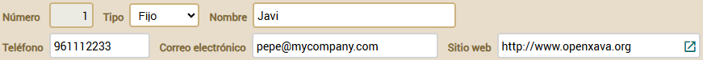
Esto es feo. Sería mejor tener todos los datos alineados por columnas. Puedes
definir la vista de esta forma:
@View( members=
"#numero, tipo, nombre;" +
"telefono, correoElectronico, sitioWeb")
Fíjate que ahora usas
# al principio de
members. Ahora obtienes
este resultado:
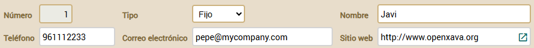
Ahora, gracias a la
#, los miembros están alineados por columnas.
Esta característica también está disponible para los grupos y secciones (ver más abajo). Además, si pones
alignedByColumns=true en
xava.properties
todos los elementos se alinean por columna incluso si no especificas
#
en la vista.
Grupos
Con los grupos podemos agrupar un conjunto de propiedades relacionadas, y
esto tiene un efecto visual. Para definir un grupo solo necesitamos poner
el nombre del grupo y después sus miembros entre corchetes. Justo de esta
forma:
@View(members=
"id [ codigoZona, codigoOficina, codigo ];" +
"nombre"
)
En este caso el resultado sería:

Se puede observar como las tres propiedades puestas en el grupo aparecen
dentro de un marquito, y como
nombre aparece fuera. El punto y
coma antes de
nombre es para que aparezca abajo, si no
aparecería a continuación.
Podemos poner varios grupos en una vista:
@View(members=
"general [" +
" codigo;" +
" tipo;" +
" nombre;" +
"]" +
"contacto [" +
" telefono;" +
" correoElectronico;" +
" sitioWeb;" +
"]"
)
En este caso se visualizaría así:

Si queremos que aparezca uno debajo del otro debemos poner un punto y coma
después del grupo, como sigue:
@View(members=
"general [" +
" codigo;" +
" tipo;" +
" nombre;" +
"];" +
"contacto [" +
" telefono;" +
" correoElectronico;" +
" sitioWeb;" +
"]"
)
En este caso se visualizaría así:

Anidar grupos está soportado. Esta interesante característica permite
disponer los elementos de la interfaz gráfica de una forma simple y
flexible. Por ejemplo, si definimos una vista como ésta:
@View(members=
"factura;" +
"datosAlbaran [" +
" tipo, codigo;" +
" fecha;" +
" descripcion;" +
" envio;" +
" datosTransporte [" +
" distancia; vehiculo; modoTransporte; tipoConductor;" +
" ]" +
" datosEntregadoPor [" +
" entregadoPor;" +
" transportista;" +
" empleado;" +
" ]" +
"]"
)
Obtendremos lo siguiente:
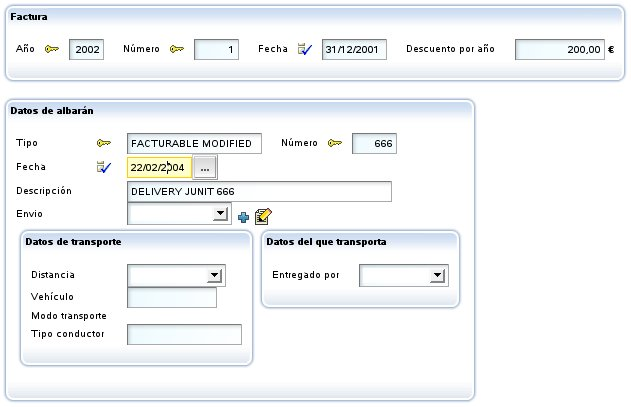
A veces es útil distribuir los miembros alineándolos por columnas, como en
una tabla. Por ejemplo, la siguiente vista:
@View(name="Amounts", members=
"año, numero;" +
"importes [" +
"descuentoCliente, descuentoTipoCliente, descuentoAño;" +
"sumaImportes, porcentajeIVA, iva;" +
"]"
)
...será visualizada como sigue:
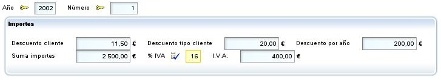
Esto es feo. Sería mejor tener la información alineada por columnas.
Podemos definir el grupo de esta forma:
@View(name="Amounts", members=
"año, numero;" +
"importes [#" +
"descuentoCliente, descuentoTipoCliente, descuentoAño;" +
"sumaImportes, porcentajeIVA, iva;" +
"]"
)
Notemos que usamos
[# en vez de
[. Ahora obtenemos
este resultado:
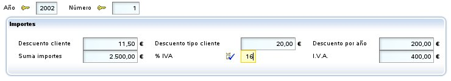
Ahora, gracias al
#, los miembros están alineado por columnas.
Esta prestación está disponible también para las secciones (ver abajo) y
para
members, es decir para la vista raíz
(nuevo en v4.7.1).
Además, si ponemos
alignedByColumns=true (nuevo en v4.7.1) en
xava.properties
todos los elementos se alinean por columna incluso si no especificamos
#
en la vista.
Secciones
Además de en grupo los miembros se pueden organizar en secciones. Para
definir una sección solo necesitamos poner el nombre de la sección y
después sus miembros entre llaves. Veamos un ejemplo en la entidad
Factura:
@View(members=
"año, numero, fecha, pagada;" +
"comentario;" +
"cliente { cliente }" +
"lineas { lineas }" +
"importes { sumaImportes; porcentajeIVA; iva }" +
"albaranes { albaranes }"
)
El resultado visual sería:
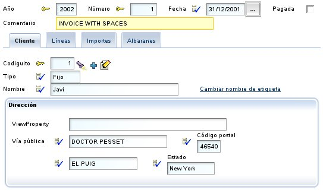
Las secciones se convierten en pestañitas que el usuario puede pulsar para
ver la información contenida en esa sección. Podemos observar también como
en la vista indicamos todo tipo de miembros (y no solo propiedades), así
cliente
es una referencia,
lineas y
albaranes son colecciones.
Se permiten secciones anidadas. Por ejemplo, podemos definir una vista
como ésta:
@View(name="SeccionesAnidadas", members=
"año, numero, fecha;" +
"cliente { cliente }" +
"datos {" +
" lineas { lineas }" +
" importes {" +
" iva { porcentajeIVA; iva }" +
" sumaImportes { sumaImportes }" +
" }" +
"}" +
"albaranes { albaranes }"
)
En este caso podemos obtener una interfaz gráfica como esta:
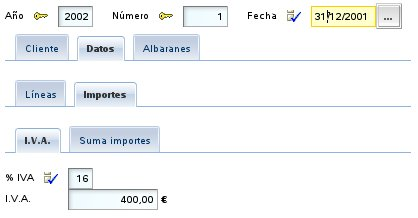
Al igual que en los grupos, las secciones permiten usar
# para
conseguir alineado por columnas, así:
@View(name="ImportesAlineadosEnSeccion", members=
"año, numero;" +
"cliente { cliente }" +
"lineas { lineas }" +
"importes {#" +
"descuentoCliente, descuentoTipoCliente, descuentoAño;" +
"sumaImportes, porcentajeIVA, iva;" +
"}"
)
Con el mismo efecto que en el caso de los
grupos.
Marcos uno al lado del otro
Los miembros que se visualizan dentro de un marco, como es el caso de
las referencias, los grupos o las colecciones, se pueden visualizar uno al lado del otro
en lugar de uno debajo del otro, si lo deseamos. Es decir, es posible disponer
dos marcos en una misma fila. Para esto sólo tenemos que separarlos con coma en
lugar de punto y coma, como se puede ver en este ejemplo:
@View( members=
"nombre;" +
"comercial, comercialAlternativo"
)
En este caso nombre es una propiedad plana, pero comercial y comercialAlternativo
son referencias. El resultado visual sería:
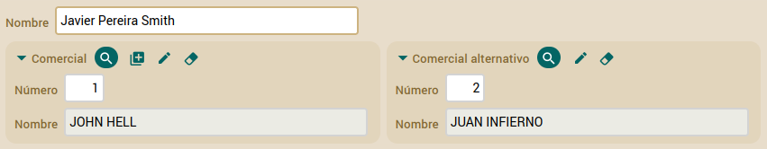
Donde puedes ver que comercial y comercialAlternativo se visualizan en la misma línea.
Esto es así también para colecciones y grupos. Además, se pueden combinar, podemos poner una referencia
y un grupo (por ejemplo) en la misma línea.
Lo que no está permitido es colocar en la misma línea miembros que se visualicen con un campo simple,
como propiedades o referencia con @DescriptionsList y miembros que usen marcos como referencia,
grupos y colecciones. En caso de declarlo así en @View, OpenXava mostrará los marcos en su propia línea.
Por ejemplo, si tenemos este código:
@View( members="nombre, comercial" )
Donde indicamos que nombre, que es una propiedad plana, y comercial, que es una referencia,
se visualicen uno al lado del otro, ya que los separamos por coma. Al visualizarlo,
OpenXava acaba haciéndolo así:
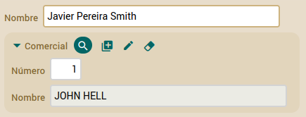
Es decir, uno debajo del otro. OpenXava ha puesto la referencia comercial en su propia línea.
Vemos como no podemos visualizar campos simples y marcos uno al lado del otro.
Herencia
de vistas (nuevo en v3.1.2)
Al definir una nueva vista podemos heredar los miembros y disposición de
una vista ya existente. De esta manera, evitamos copiar y pegar, y al
mismo tiempo mantenemos nuestro código breve y fácil de cambiar.
Esto se hace mediante
extendsView. Por ejemplo, si tenemos una
vista como la siguiente:
@View(name="MuySimple", members="nombre, sexo"),
Esto produce la siguiente interfaz de usuario:

Si ahora queremos crear una nueva vista que extienda de esta simplemente
hemos de escribir:
@View(name="Simple", extendsView="MuySimple", members="lenguajePrincipal")
y obtendremos lo siguiente:
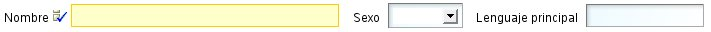
Como vemos los miembros de la vista
MuySimple se incluyen
automáticamente en la vista
Simple, y los miembros propios de la
vista se añaden al final.
En este caso estamos extendiendo una vista de la misma entidad, pero
también podemos extender una vista de la entidad padre, si que es que
estamos usando herencia JPA. Es decir, si tenemos una entidad llamada
Programador:
@Entity
@View(name="ConSecciones",
members =
"nombre, sexo;" +
"lenguajePrincipal;" +
"experiencias { experiencias }"
)
public class Programador {
Podemos reutilizar la vista
ConSecciones en una clase hija de
Programador:
@Entity
@View(name="ConSecciones", extendsView="super.ConSecciones",
members =
"marcoTrabajoFavorito;" +
"marcosTrabajo { marcosTrabajo }"
)
public class ProgramadorJava extends Programador {
Como podemos ver, la forma de extender una vista de una superclase es
usando el prefijo
super en
extendsView. En este caso
la vista
ConSecciones de la entidad
ProgramadorJava
tendrá todos los miembros de la vista
ConSecciones de la entidad
Programador más los suyos propios.
Véamos el aspecto de la vista
ConSecciones de
ProgramadorJava:

Si queremos extender la vista por defecto (la vista por defecto es la
vista sin nombre) hemos de usar la palabra DEFAULT como nombre en
extendsView.
Como en este ejemplo:
@View(members="nombre, sexo; lenguajePrincipal, marcoTrabajoFavorito; experiencias")
@View(name="Completa", extendsView="DEFAULT", members = "marcosTrabajo")
La vista
Completa tendrá todos los miembros de la vista por
defecto (
nombre, sexo, lenguajePrincipal, marcoTrabajoFavorito,
experiencias) más
marcosTrabajo.
La herencia de vistas solo aplica a los miembros y su distribución. Las
acciones, eventos y otros refinamiento a nivel de miembro no se heredan.
Disposición
adaptable (nuevo en v5.7)
Disposición adaptable (
responsive) significa que la disposición
de la interfaz de usuario se adapta al tamaño de la página, así tu
aplicación funciona bien en una tableta de 7", un portátil de 15" o en una
pantalla de 22", con el mismo código. Para activar la disposición
adaptable en OpenXava añade la siguiente entrada en
xava.properties
de tu proyecto:
flowLayout=true
Después de esto, OpenXava ajusta la disposición de los campos al tamaño de
la página. Por ejemplo, a partir de la siguiente
@View:
@View( members=
"#numero, descripcion;" +
"color, fotos;" +
"familia, subfamilia;" +
"almacen, zonaUno;" +
"precioUnitario, precioUnitarioEnPesetas;" +
"precioUnitarioConImpuestos"
)
Con una pantalla pequeña obtendrás:

Con una pantalla no tan pequeña obtendrás:

Y con una pantalla un poco más grande:
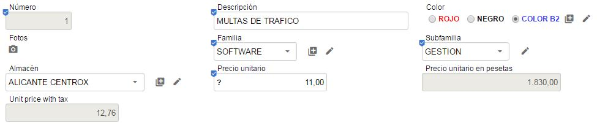
Y así por el estilo. Fíjate como # , y ; de
@View se ignoran.
Filosofía
para la disposición
Es de notar tenemos grupos y no marcos y secciones y no pestañas. Porque
en las vistas de OpenXava intentamos mantener un nivel de abstracción
alto, es decir, un grupo es un conjunto de propiedades relacionadas
semánticamente, y las secciones nos permite dividir la información en
partes cuando tenemos mucha y posiblemente no se pueda visualizar toda a
la vez, el que los grupos se representen con marquitos y las secciones con
pestañas es una cuestión de implementación, pero el generador del interfaz
gráfico podría escoger usar un árbol u otro control gráfico para
representar las secciones, por ejemplo.
Normas
para las anotaciones de vista
Podemos anotar un miembro (propiedad, referencia o colección) con varias
anotaciones que refinan su estilo de visualización y comportamiento.
Además podemos definir que el efecto de estas anotaciones solo aplica a
algunas vistas.
Por ejemplo, si tenemos una entidad con varias vistas:
@Entity
@View( members="codigo; tipo; nombre; direccion" )
@View( name="A", members="codigo; tipo; nombre; direccion; comercial" )
@View( name="B", members="codigo; tipo; nombre; comercial; comercialAlternativo" )
@View( name="C", members="codigo; tipo; nombre; direccion; lugaresEntrega" )
public class Cliente {
Si usas una versión de OpenXava anterior a la 6.1 has de envolver las
vistas con
@Views:
@Entity
@Views({ // Sólo necesario hasta v6.0.2
@View( members="codigo; tipo; nombre; direccion" ),
@View( name="A", members="codigo; tipo; nombre; direccion; comercial" ),
@View( name="B", members="codigo; tipo; nombre; comercial; comercialAlternativo" ),
@View( name="C", members="codigo; tipo; nombre; direccion; lugaresEntrega" )
})
public class Cliente {
Si ahora queremos que la propiedad
nombre sea de solo lectura.
Podemos anotarlo de esta manera:
@ReadOnly
private String nombre;
De esta forma
nombre es de solo lectura en todas las vistas.
Ahora bien, puede que queramos que
nombre sea de solo lectura
solo en las vistas B y C, entonces podemos definir el miembro como sigue:
@ReadOnly(forViews="B, C")
private String nombre;
Otra forma para definir este mismo caso es:
@ReadOnly(notForViews="DEFAULT, A")
private String nombre;
Usando
notForViews indicamos las vistas donde la propiedad
nombre
es de solo lectura. DEFAULT se usa para referenciar a la vista por
defecto, la vista sin nombre.
Algunas anotaciones tiene uno o más valores, por ejemplo para indicar que
vista del tipo referenciado se usará para visualizar una referencia usamos
la anotación
@ReferenceView:
@ReferenceView("Simple")
private Comercial comercial;
En este caso cuando se visualiza el comercial se usa la vista
Simple,
definida en la clase
Comercial.
¿Qué ocurre si queremos usar la vista
Simple de
Comercial
solo en la vista
B de
Cliente? Es fácil:
@ReferenceView(forViews="B", value="Simple")
private Comercial comercial;
¿Qué ocurre si lo que queremos es usar la vista
Simple de
Comercial
solo en la vista
B de
Cliente y la vista
MuySimple
de
Comercial para la vista
A de
Cliente? En
este caso hemos de usar varias
@ReferenceView:
@ReferenceView(forViews="B", value="Simple"),
@ReferenceView(forViews="A", value="MuySimple")
Si usas una versión anterior a v6.1 debes agrupar las
@ReferenceView
dentro de una
@ReferenceViews, justo así:
@ReferenceViews({ // Sólo necesario hasta v6.0.2
@ReferenceView(forViews="B", value="Simple"),
@ReferenceView(forViews="A", value="MuySimple")
})
Estas normas aplican a todas las anotaciones de este capítulo, excepto
@View
y
@Views.
Personalización
de propiedad
Podemos refinar la forma de visualización y comportamiento de una
propiedad en la vista usando las siguientes anotaciones:
@ReadOnly // 1
@LabelFormat // 2
@DisplaySize // 3
@OnChange // 4
@Action // 5
@Editor // 6
@LabelStyle // 7 Nuevo en v4m4
@LargeDisplay // 8 Nuevo en v7.4
private tipo nombrePropiedad;
Todas estas anotaciones siguen las
normas
para anotaciones de vista y todas ellas son opcionales. OpenXava
siempre asume valores por defecto correcto si se omiten.
- @ReadOnly (OX): Si marcas una propiedad con esta anotaciones
no será nunca editable por el usuario en esta vista. Una alternativa a
esto es hacer la propiedad editable/no editable programáticamente
usando org.openxava.view.View. Desde v6.2 puedes
especificar @ReadOnly(onCreate=false) para que la propiedad
sea editable al crear una nueva entidad, pero de sólo lectura en el
resto de casos.
- @LabelFormat
(OX): Forma en que se visualiza la etiqueta para
esta propiedad. Su valor puede ser LabelFormatType.NORMAL,
LabelFormatType.SMALL
o LabelFormatType.NO_LABEL.
- @DisplaySize (OX): La longitud en caracteres del editor en la
interfaz de usuario usado para visualizar esta propiedad. El editor
mostrará solo los caracteres indicados con longitud-visual pero
permite que el usuario introduzca hasta el total de la longitud de la
propiedad. Si @DisplaySize no se especifica se asume el
valor de la longitud de la propiedad.
- @OnChange
(OX): Acción a realizar cuando cambia el valor de
esta propiedad. Solo una acción @OnChange por vista está
permitida.
- @Action
(OX): Acciones (mostradas como vínculos, botones o
imágenes al usuario) asociadas (visualmente) a esta propiedad y que el
usuario final puede ejecutar. Es posible definir varias @Action
por cada vista.
- @Editor
(OX): Nombre del editor a usar para visualizar la
propiedad en esta vista. El editor tiene que estar declarado en openxava/src/main/resources/xava/default-editors.xml
o src/main/resources/xava/editores.xml de nuestro
proyecto. Antes de v7 eran OpenXava/xava/default-editors.xml
y xava/editores.xml de nuestro proyecto.
- @LabelStyle (OX): (Nuevo en v4m4): Estilo con el que
se visualiza la etiqueta para esta propiedad. Por defecto están
definidos los estilos 'bold-label', 'italic-label' y 'reverse-label';
cualquier otro estilo puede ser definido por el propio usuario (basta
con incluirlo en un .css).
- @LargeDisplay
(OX): (Nuevo en v7.4): El valor de la
propiedad se muestra en un formato grande para hacerlo claramente
visible. Generalmente se utiliza una fuente grande, dentro de un marco
pequeño con espaciado, etc. Además, permite mostrar un icono, un
prefijo y un sufijo opcionalmente.
Aparte de las anotaciones relacionadas con la vista de arriba puedes
anotar tus propiedades con anotaciones
estilo estereotipo.
Formato
de etiqueta
Un ejemplo sencillo para cambiar el formato de la etiqueta (
@LabelFormat):
@LabelFormat(LabelFormatType.SMALL)
private int codigoPostal;
En este caso el código postal lo visualiza así:
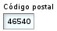
El formato
LabelFormatType.NORMAL es el que hemos visto
hasta ahora (con la etiqueta grande y la izquierda) y el formato
LabelFormatType.NO_LABEL simplemente hace que
no salga etiqueta. A partir de v4m4 puedes usar
defaultLabelFormat
en
xava.properties para especificar el formato a usar cuando se
omita
@LabelFormat.
Evento
de cambio de valor de propiedad
Si queremos reaccionar al evento de cambio de valor de una propiedad
podemos user
@OnChange como sigue:
@OnChange(AlCambiarNombreCliente.class)
private String nombre;
El código que se ejecutará será:
package org.openxava.test.actions;
import org.openxava.actions.*;
import org.openxava.test.model.*;
/**
* @author Javier Paniza
*/
public class AlCambiarNombreCliente extends OnChangePropertyBaseAction { // 1
public void execute() throws Exception {
String valor = (String) getNewValue(); // 2
if (valor == null) return;
if (valor.startsWith("Javi")) {
getView().setValue("tipo", Cliente.Tipo.FIJO); // 3
}
}
}
La acción ha de implementar
IOnChangePropertyAction aunque es
más cómodo hacer que descienda de
OnChangePropertyBaseAction
(1). Dentro de la acción tenemos disponible
getNewValue() (2)
que proporciona el nuevo valor que ha introducido el usuario, y
getView()
(3) que nos permite acceder programáticamente a la vista (
View) (cambiar valores, ocultar miembros,
hacerlos editables, o lo que queramos).
Acciones
de la propiedad
También podemos especificar acciones (
@Action) que el usuario puede pulsar
directamente:
@Action("Albaran.generarNumero")
private int numero;
En este caso en vez de la clase de la acción se pone un identificador que
consiste en el nombre de controlador y nombre de acción. Esta acción ha de
estar registrada en
controladores.xml de la siguiente forma:
<controlador nombre="Albaran">
...
<accion nombre="generarNumero" oculta="true"
clase="org.openxava.test.acciones.GenerarNumeroAlbaran">
<usa-objeto nombre="xava_view"/> <!-- No obligatorio desde v4m2 -->
</accion>
...
</controlador>
Las acciones se visualizan con un vínculo o imagen al lado del editor de
la propiedad. Como sigue:

Por defecto el vínculo de la acción aparece solo cuando la propiedad es
editable, ahora bien si la propiedad es de solo lectura (
@ReadOnly) o
calculada
entonces está siempre disponible. Podemos usar el atributo
alwaysEnabled
a
true para que el vínculo esté siempre presente, incluso si la
propiedad no es editable. Como sigue:
@Action(value="Albaran.generarNumero", alwaysEnabled=true)
El atributo
alwaysEnabled es opcional y su valor por defecto es
false.
El código de la acción anterior es:
package org.openxava.test.acciones;
import org.openxava.actions.*;
/**
* @author Javier Paniza
*/
public class GenerarNumeroAlbaran extends ViewBaseAction {
public void execute() throws Exception {
getView().setValue("numero", new Integer(77));
}
}
Una implementación simple pero ilustrativa. Se puede usar cualquier acción
definida en
controladores.xml y su funcionamiento es el normal
para una acción OpenXava. En el
capítulo
7 veremos más detalles sobre los controladores.
Opcionalmente podemos hacer nuestra acción una
IPropertyAction (esto está disponible solo
para acciones usadas en
@Action de propiedades, the esta forma
la vista contenedora y el nombre de la propiedad son inyectados en la
acción por OpenXava. La clase de la acción anterior se podría reescribir
así:
package org.openxava.test.acciones;
import org.openxava.actions.*;
import org.openxava.view.*;
/**
* @author Javier Paniza
*/
public class GenerarNumeroAlbaran
extends BaseAction
implements IPropertyAction { // 1
private View view;
private String property;
public void execute() throws Exception {
view.setValue(property, new Integer(77)); // 2
}
public void setProperty(String property) { // 3
this.property = property;
}
public void setView(View view) { // 4
this.view = view;
}
}
Esta acción implementa
IPropertyAction (1), esto requiere que la
clase tenga los métodos
setProperty() (3) y
setView()
(4), estos valores serán inyectados en la acción antes de llamar al método
execute(), donde pueden ser usados (2). En este caso no necesitas
inyectar el objeto
xava_view al definir la acción en
controladores.xml.
La vista inyectada por
setView() (4) es la vista más interna que
contiene la propiedad, por ejemplo, si la propiedad está dentro de un
agregado es la vista de ese agregado, no la vista principal del módulo. De
esta manera podemos escribir acciones más reutilizables.
Escoger
un editor (propiedad)
Un editor visualiza la propiedad al usuario y le permite editar su valor.
OpenXava usa por defecto el editor asociado al estereotipo o tipo de la
propiedad, pero podemos especificar un editor concreto para visualizar una
propiedad usando
@Editor.
Por ejemplo, OpenXava usa un combo para editar las propiedades de tipo
enum,
pero si queremos visualizar una propiedad de este tipo en alguna vista
concreta usando un radio button podemos definir esa vista de esta forma:
@Editor(forViews="TipoConRadioButton", value="ValidValuesRadioButton")
private Tipo tipo;
public enum Tipo { NORMAL, FIJO, ESPECIAL };
En este caso para visualizar/editar se usará el editor
ValidValuesRadioButton,
en lugar de del editor por defecto.
ValidValuesRadioButton está
definido en
openxava/src/main/resources/xava/default-editors.xml
(
OpenXava/xava/default-editors.xml para v6 o anterior) como
sigue:
<editor name="ValidValuesRadioButton" url="radioButtonEditor.jsp"/>
Este editor está incluido con OpenXava, pero nosotros podemos crear
nuestro propios editores con nuestro propios JSPs y declararlos en el
archivo
editores.xml en
src/main/resources/xava
(simplemente
xava en v6 o anterior) de nuestro proyecto.
Esta característica es para cambiar el editor solo en una vista. Si lo que
se pretende es cambiar el editor para un estereotipo, tipo o una propiedad
de un modelo a nivel de aplicación entonces lo mejor es configurarlo
usando el archivo
editores.xml.
Combos
dinámicos (nuevo en v5.8)
Para un combo con una lista estática de valores podemos usar una propiedad
de tipo
enum. Para un combo que obtenga los datos de la base de
datos podemos usar una referencia con
@DescriptionsList. Si
queremos cualquier otra cosa a partir de v5.8 tenemos algunos métodos en
la clase
org.openxava.view.View que nos permiten crear listas
desplegables usando nuestra propia lógica a partir de cualquier propiedad.
Por ejemplo, para una propiedad simple como esta:
private String color;
Podemos añadir un combo por código de esta manera:
getView().addValidValue("color", "blc", "Blanco");
getView().addValidValue("color", "ngr", "Negro");
Esto crea un combo para la propiedad
color con dos valores
blc
con la etiqueta
Blanco y
ngr con la etiqueta
Negro.
Aparte de
addValidValue(),
contamos con
removeValidValue()
y
getValidValues().
A partir de v6.3 también tienes
clearValidValues(),
disableValidValues(),
removeBlankValidValue()
y
hasBlankValidValue().
Desde v7.1 puedes seleccionar y editar la opción elegida o ingresar un
nuevo valor directamente usando el editor
EditableValidValues, por
ejemplo:
@Editor("EditableValidValues")
@Column(length = 15)
private String color;
En este ejemplo seleccionando
Blanco, puedes editarlo por
Blanco
beige o ingresar un nuevo valor como
Amarillo. Estos nuevos
valores no se agregarán a la lista original de opciones para el uso en
otros registros.
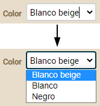
Formato grande de
visualización (nuevo en v7.4)
Es posible hacer que el valor de una propiedad se visualice con un tamaño
grande. Así podemos resaltar la propiedad en la vista o hacer una vista
estilo cuadro de mandos donde todos los datos tienen formato grande.
Solo has de anotar tus propiedades
con
@LargeDisplay,
de esta forma:
@LargeDisplay
int anyo;
@Money @LargeDisplay
BigDecimal descuento;
Lo que se visualizara así:
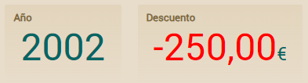
Fíjate como en el caso de la
propiedad descuento el valor aparece en rojo, esto es porque los
valores negativos salen en rojo (este color se puede cambiar vía CSS).
Además, nota como tiene como sufijo el símbolo del euro, esto es porque la
propiedad está anotada con @Money, en ese caso saca el símbolo de
la móneda como prefijo o sufijo según el locale del servidor.
También tenemos la opción de
especificar nosotros que sufijo o prefijo queremos, con los atributos prefix
y suffix:
@LargeDisplay(prefix="€")
BigDecimal sumaImportes;
@LargeDisplay(suffix="%", icon="label-percent-outline")
BigDecimal porcentajeIVA;
Que se visualizaría:
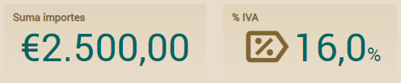
Ahora el símbolo del euro aparece
como prefijo de forma fija, no importa que la propiedad esté o no anotada
con
@Money. Y un detalle más, se visualiza un icono en la
propiedad
porcentajeIVA, esto lo hemos conseguido con
icon="label-percent-outline".
Los iconos son identificadores de
Material
Design Icons.
Como ocurre con todos los
elementos visuales de OpenXava, puedes cambiar el estilo del formato
grande de visualización (
@LargeDisplay), como el tamaño de la
letra, espaciado, etc. usando CSS. Las clases CSS disponibles son
.ox-large-display,
.ox-large-display-suffix, .ox-large-display-negative,
.ox-large-display-value o
.ox-large-display i para el icono.
Para los colores puedes cambiar los valores de las variables
--large-display-color,
--large-display-negative-color y
--large-display-icon-color.
El código CSS lo puedes incluir en
custom.css o en tu propio
estilo como se explica en la
documentación
sobre el estilo visual personalizado.
Personalización de
referencia
Podemos refinar la forma de visualización y comportamiento de una
referencia en la vista usando las siguientes anotaciones:
@ReferenceView // 1
@ReadOnly // 2
@NoFrame // 3
@NoCreate // 4
@NoModify // 5
@NoSearch // 6
@AsEmbedded // 7
@SearchAction // 8
@SearchListCondition // 9 Nuevo en v4m4
@DescriptionsList // 10
@LabelFormat // 11
@Action // 12
@OnChange // 13
@OnChangeSearch // 14
@Editor // 15 Nuevo en v3.1.3
@LabelStyle // 16 Nuevo en v4m4
@Collapsed // 17 Nuevo en v5.0
@SearchListTab // 18 Nuevo en v7.4
@NewView // 19 Nuevo en v7.7
@EditView // 20 Nuevo en v7.7
@NewAction // 21 Nuevo en v7.7
@EditAction // 22 Nuevo en v7.7
@ManyToOne
private tipo nombreReferencia;
Todas estas anotaciones siguen las
normas
para anotaciones de vista y todas ellas son opcionales. OpenXava
siempre asume valores por defecto correcto si se omiten.
- @ReferenceView
(OX): Si omitimos esta anotación usa la vista por
defecto del objeto referenciado para visualizarlo, con este anotación
podemos indicar que use otra vista.
- @ReadOnly (OX): Si usamos esta anotación esta referencia no
será nunca editable por el usuario en esta vista. Una alternativa a
esto es hacer la propiedad editable/no editable programáticamente
usando org.openxava.view.View. Desde v6.2 puedes
especificar @ReadOnly(onCreate=false) para que la referencia
sea editable al crear una nueva entidad, pero de sólo lectura en el
resto de casos.
- @NoFrame
(OX): El dibujador de la interfaz gráfica usa un
marco para envolver todos los datos de la referencia. Con esta
anotación se puede indicar que no se use ese marco.
- @NoCreate (OX): Por defecto el usuario tiene opción para
crear un nuevo objeto del tipo referenciado. Con esta anotación
anulamos esta posibilidad.
- @NoModify (OX): Por defecto el usuario tiene opción para
modificar el objeto actualmente referenciado. Con esta anotación
anulamos esta posibilidad.
- @NoSearch (OX): Por defecto el usuario tiene un vínculo para
poder realizar búsquedas con una lista, filtros, etc. Con esta
anotación anulamos esta posibilidad.
- @AsEmbedded (OX): Por defecto en el caso de una referencia a
una clase incrustable
el usuario puede crear y editar sus datos, mientras que en el caso de
una referencia a una entidad el usuario escoge una entidad existente.
Si ponemos @AsEmbedded entonce la interfaz de usuario para
referencias a entidad se comporta como en el caso de los incrustados,
permitiendo al usuario crear un nuevo objeto y editar sus datos
directamente. No tiene efecto en el caso de una referencia a un objeto
incrustado. ¡Ojo! Si borramos una entidad sus entidades referenciadas
no se borran, incluso si estamos usando @AsEmbedded.
- @SearchAction
(OX): Nos permite especificar nuestra propia
acción de búsqueda cuando se pulsa al vínculo de buscar. Solo es
posible una por vista.
- @SearchListCondition
(OX): (Nuevo en v4m4) Condición a usar
para la lista de elementos seleccionable susceptibles de ser asignados
a la referencia.
- @DescriptionsList
(OX): Permite visualizar los datos como una lista
descripciones, típicamente un combo. Práctico cuando hay pocos
elementos del objeto referenciado.
- @LabelFormat (OX): Formato de la etiqueta de la referencia.
Solo aplica si esta referencia se ha anotado con @DescriptionsList.
Funciona como en el
caso de las propiedades.
- @Action (OX): Acciones (mostradas como vínculos, botones o
imágenes al usuario) asociadas (visualmente) a esta referencia y que
el usuario final puede ejecutar. Funciona como en el
caso de las propiedades. Podemos definir varias acciones a la
misma referencia en una vista.
- @OnChange
(OX): Acción a realizar cuando cambia el valor de
esta propiedad. Solo una acción @OnChange por vista está
permitida.
- @OnChangeSearch
(OX): Nos permite especificar nuestra propia
acción de búsqueda cuando el usuario teclea una clave nueva. Solo es
posible una por vista.
- @Editor
(OX): (Nuevo en v3.1.3) Nombre del
editor a usar para visualizar la referencia en esta vista. El editor
tiene que estar declarado en openxava/src/main/resources/xava/default-editors.xml
o src/main/resources/xava/editores.xml de nuestro
proyecto. Antes de v7 eran OpenXava/xava/default-editors.xml
y xava/editores.xml de nuestro proyecto.
- @LabelStyle (OX): (Nuevo en v4m4): Estilo de la
etiqueta de la referencia. Solo aplica si esta referencia se ha
anotado con @DescriptionsList. Funciona como en el
caso de las propiedades.
- @Collapsed (OX): (Nuevo en v5.0) La referencia se
mostrará contraída para las vistas indicadas. Visualmente significa
que el marco que rodea a la vista de la referencia se iniciará
cerrado. Más tarde el usuario podrá establecer sus preferencias
haciendo clic en el icono de expansión.
- @SearchListTab
(OX): (Nuevo en v7.4) Definimos el tab a
mostrar en la lista cuando se hace una busqueda. Si omitimos esta
anotación, al realizar una búsqueda se mostrará el tab por defecto.
- @NewView
(OX): (Nuevo en v7.7) Vista del objeto
referenciado a usar cuando se crea uno nuevo desde esta referencia.
- @EditView
(OX): (Nuevo en v7.7) Vista del objeto
referenciado a usar cuando se modifica desde esta referencia.
- @NewAction
(OX): (Nuevo en v7.7) Permite definir tu
propia acción para empezar a crear un nuevo elemento para esta referencia.
- @EditAction
(OX): (Nuevo en v7.7) Permite definir tu
propia acción para ver/editar el elemento actual de esta referencia.
Si no usamos ninguna de estas anotaciones OpenXava dibuja la referencia
usando su vista por defecto. Por ejemplo si tenemos una referencia así:
@ManyToOne
private Familia familia;
La interfaz gráfica tendrá el siguiente aspecto:
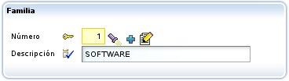
Escoger
vista
La modificación más sencilla sería especificar que vista del objeto
referenciado queremos usar. Esto se hace mediante
@ReferenceView:
@ManyToOne(fetch=FetchType.LAZY)
@ReferenceView("Simple")
private Factura factura;
Para esto en el componente
Factura tenemos que tener una vista
llamada simple:
@Entity
@Views({
...
@View(name="Simple", members="año, numero, fecha, descuentoAño;"),
...
})
public class Factura {
Y así en lugar de usar la vista de la
Factura por defecto, que
supuestamente sacará toda la información, visualizará ésta:
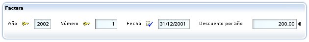
Personalizar
el enmarcado
Si combinamos
@NoFrame con un grupo podemos agrupar
visualmente una propiedad que no forma parte de la referencia, por
ejemplo:
@View( members=
...
"comercial [" +
" comercial; " +
" relacionConComercial;" +
"]" +
...
)
public class Cliente {
...
@ManyToOne(fetch=FetchType.LAZY)
@NoFrame
private Comercial comercial;
...
}
Así obtendríamos:

Acción
de búsqueda propia
El usuario puede buscar un nuevo valor para la referencia simplemente
tecleando el código y al salir del editor recupera el valor
correspondiente; por ejemplo, si el usuario teclea "1" en el campo del
código de comercial, el nombre (y demás datos) del comercial "1" serán
automaticamente rellenados. También podemos pulsar la linternita, en ese
caso vamos a una lista en donde podemos filtrar, ordenar, etc, y marcar el
objeto deseado.
Para definir nuestra propia rutina de búsqueda podemos usar
@SearchAction, como sigue:
@ManyToOne(fetch=FetchType.LAZY) @SearchAction("MiReferencia.buscar")
private Comercial comercial;
Ahora al pulsar la linternita ejecuta nuestra acción, la cual tenemos que
tener definida en
controladores.xml:
<controlador nombre="MiReferencia">
<accion nombre="buscar" oculta="true"
clase="org.openxava.test.acciones.MiAccionBuscar"
imagen="images/search.gif">
<usa-objeto nombre="xava_view"/> <!-- No obligatorio desde v4m2 -->
<usa-objeto nombre="xava_referenceSubview"/> <!-- No obligatorio desde v4m2 -->
<usa-objeto nombre="xava_tab"/> <!-- No obligatorio desde v4m2 -->
<usa-objeto nombre="xava_currentReferenceLabel"/> <!-- No obligatorio desde v4m2 -->
</accion>
...
</controlador>
Lo que hagamos en
MiAccionBuscar ya es cosa nuestra. Podemos,
por ejemplo, refinar la acción por defecto de busqueda para filtrar la
lista usada para buscar, como sigue:
package org.openxava.test.acciones;
import org.openxava.actions.*;
/**
* @author Javier Paniza
*/
public class MiAccionBuscar extends ReferenceSearchAction {
public void execute() throws Exception {
super.execute(); // El comportamiento por defecto para buscar
getTab().setBaseCondition("${codigo} < 3"); // Añadir un filtro a la lista
}
}
Veremos más acerca de las acciones en el
capítulo
7.
Condición para la lista de
búsqueda (referencia, nuevo en v4m4)
Cuando el usuario pulsa la linternita va a una lista donde puede filtrar,
ordenar, etc, y marca el objeto deseado. Puedes usar
@SearchAction
para sobreescribir completamente este comportamiento, aunque si solo
quieres establecer una condición propia, es más práctico usar
@SearchListCondition. Desde
v7.4 la
condición soporta el uso de
${this.} para referenciar una
propiedad de la entidad misma. El ejemplo anterior se puede reescribir
como sigue:
private int numero;
@ManyToOne(fetch=FetchType.LAZY)
@SearchListCondition("${codigo} < 3")
@SearchListCondition("${codigo} < ${this.numero}", forViews="SearchListCondition") // ${this.} Nuevo en v7.4
private Comercial comercial;
Fíjate como no necesitas crear ninguna acción.
Acción
de creación propia
Si no hemos puesto
@NoCreate
el usuario tendrá un vínculo para poder crear un nuevo objeto desde la
referencia. Es el icono con un + que hemos marcado en rojo:
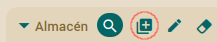
OpenXava sacará un diálogo
con la vista por defecto del componente referenciado y permitirá
introducir valores y pulsar un botón para crearlo. Así:
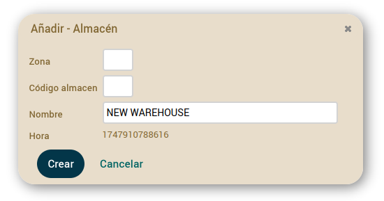
Pero sí que podemos personalizar
como funciona este diálogo de creación, para todas las referencia a
Almacen
en nuestra aplicación. Para esto hemos de crear un controlador llamado
como la entidad con el sufijo
Creation (
AlmacenCreation,
ClienteCreation, ProductoCreation, etc). Si OpenXava ve que existe
un controlador así lo usa en vez del de por defecto para permitir crear un
nuevo objeto desde una referencia. Por ejemplo, podemos poner en nuestro
controladores.xml:
<!--
Dado que su nombre es AlmacenCreation (nombre modelo + Creation) es usado
por defecto para crear desde referencia, en lugar de NewCreation.
La acción 'new' se ejecuta automáticamente.
-->
<controlador nombre="AlmacenCreation">
<hereda-de controlador="NewCreation"/>
<accion nombre="new" oculta="true"
clase="org.openxava.test.acciones.CrearNuevoAlmacenDesdeReferencia"/>
<accion nombre="saveNew" por-defecto="casi-siempre"
clase="org.openxava.test.acciones.GuardarNuevoAlmacenDesdeReferencia"/>
</controlador>
En este caso cuando en una referencia a
Almacen pulsemos
el icono para crear, se mostrará un diálogo para crear un
Almacen
como el de arriba, pero en lugar de usar las acciones por defecto usará
las acciones en
AlmacenCreation.
Sí tenemos una acción
new, ésta se ejecuta automáticamente justo
después de abrir el diálogo, la podemos usar para iniciar la vista si lo
necesitamos. La definimos como oculta, para que no se muestre como un
botón al usuario. Este sería un ejemplo de implementación:
package org.openxava.test.acciones;
import org.openxava.actions.*;
public class CrearNuevoAlmacenDesdeReferencia extends NewAction {
@Override
public void execute() throws Exception {
super.execute();
getView().setValue("nombre", "NUEVO ALMACEN");
}
}
En este caso, lo que hace es poner
un valor por defecto al nombre, pero podemos hacer cosas más complejas
como ocultar campos, usar otra vista diferente para el diálogo, etc.
Fíjate en el detalle de que no llama a showDialog() porque cuando
se ejecuta la acción new OpenXava ya ha abierto el diálogo.
En nuestro ejemplo también hemos
sobreescrito la acción saveNew, que es la que se ejecuta al pulsar
el botón Crear del diálogo. Esto sería un ejemplo de
implementación:
package org.openxava.test.acciones;
import org.openxava.actions.*;
public class GuardarNuevoAlmacenDesdeReferencia extends SaveNewAction {
@Override
public void execute() throws Exception {
String nombre = getView().getValueString("nombre"); // Obtener nombre antes de cerrar el diálogo
super.execute(); // Guarda el almacén y cierra el diálogo (si no hay errores de validación)
if (!getErrors().contains() && nombre.equals("NUEVO ALMACEN")) {
addWarning("almacen_creado_usando_nombre_por_defecto"); // Mensaje en archivo de mensajes i18n
}
}
}
Es también una lógica muy simple.
Si detecta que hemos grabado usando el valor por defecto para el nombre,
visualiza un mensaje de advertencia.
No es necesario sobreescribir las
dos, podemos implementar solo new o solo saveNew. También
podemos sobreescribir la acción cancel si lo necesitamos. Además,
si ponemos acciones extra en nuestro controlador AlmacenCreation,
estas acciones aparecerán como botones adicionales en el diálogo de
creación.
Desde v7.7 puedes usar la anotación
@NewAction
para definir un comportamiento propio para la acción de creación en una
referencia concreta. Por ejemplo:
@NewAction("Artist.createNewLevel")
@ManyToOne
ActingLevel level;
En este caso, cuando el usuario pulse en el icono de crear para la
referencia level en Artist, se ejecutará la acción Artist.createNewLevel
en lugar de la de por defecto. Esto solo afecta a esta referencia concreta;
otras referencias a ActingLevel en la aplicación usarán el comportamiento estándar.
Necesitas definir la acción en controllers.xml:
<controller name="Artist">
<extends controller="Typical"/>
<action name="createNewLevel" hidden="true"
icon="plus-box-multiple"
class="org.openxava.test.actions.CreateNewLevelFromArtistAction"/>
</controller>
Y la clase de la acción:
package org.openxava.test.actions;
import org.openxava.actions.*;
public class CreateNewLevelFromArtistAction extends CreateNewFromReferenceAction {
@Override
public void execute() throws Exception {
super.execute();
getView().setValue("description", "NEW ACTING LEVEL");
}
}
Fíjate que la acción extiende CreateNewFromReferenceAction,
que se encarga de abrir el diálogo y configurar la vista. Solo necesitas añadir tu lógica propia.
Acción
de modificación propia
Si no hemos puesto
@NoModify
el usuario tendrá un vínculo para poder modificar el objeto
actualmente visualizado en la referencia. Es el icono con un lápiz que
hemos marcado en rojo:
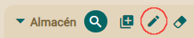
OpenXava sacará un
diálogo con la vista por defecto del componente referenciado y permitirá
introducir valores y pulsar un botón para modificar los valores
actuales. Así:
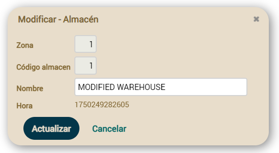
Pero sí que podemos personalizar
como funciona este diálogo de modificación, para todas las referencia a
Almacen en nuestra aplicación. Para esto hemos de crear un
controlador llamado como la entidad con el sufijo
Modification (
AlmacenModification,
ClienteModification, ProductoModification,
etc). Si OpenXava ve que existe un controlador así lo usa en vez del de
por defecto para permitir modificar un objeto existente desde una
referencia. Por ejemplo, podemos poner en nuestro
controladores.xml:
<!--
Dado que su nombre es AlmacenModification (nombre modelo + Modification) es usado
por defecto para modificar desde referencia, en lugar de Modification.
La acción 'search' se ejecuta automáticamente.
-->
<controlador nombre="WarehouseModification">
<hereda-de controlador="Modification"/>
<accion nombre="search" oculta="true"
clase="org.openxava.test.acciones.ModificarAlmacenDesdeReferencia"/>
<accion nombre="update" por-defecto="casi-siempre"
clase="org.openxava.test.acciones.ActualizarAlmacenDesdeReferencia"/>
</controlador>
En este caso cuando en una referencia a
Almacen pulsemos
el icono para modificar, se mostrará un diálogo para modificar un
Almacen
como el de arriba, pero en lugar de usar las acciones por defecto usará
las acciones en
AlmacenModification.
Sí tenemos una acción
search, ésta se ejecuta automáticamente
justo después de abrir el diálogo, la podemos usar para iniciar la vista
si lo necesitamos. La definimos como oculta, para que no se muestre como
un botón al usuario. Este sería un ejemplo de implementación:
package org.openxava.test.acciones;
import org.openxava.actions.*;
public class ModificarAlmacenDesdeReferencia extends SearchByViewKeyAction {
public void execute() throws Exception {
super.execute();
getView().setValue("nombre", "ALMACÉN MODIFICADO");
}
}
En este caso, lo que hace es
poner un valor por defecto al nombre, pero podemos hacer cosas más
complejas como ocultar campos, usar otra vista diferente para el
diálogo, etc. Fíjate en el detalle de que no llama a showDialog()
porque cuando se ejecuta la acción search OpenXava ya ha abierto el
diálogo.
En nuestro ejemplo también hemos
sobreescrito la acción update, que es la que se ejecuta al
pulsar el botón Actualizar del diálogo. Esto sería un ejemplo de
implementación:
package org.openxava.test.acciones;
import org.openxava.actions.*;
public class ActualizarAlmacenDesdeReferencia extends UpdateAction {
@Override
public void execute() throws Exception {
String nombre = getView().getValueString("nombre"); // Obtiene el nombre antes de cerrar el diálogo
super.execute(); // Actualiza el almacén y cierra el diálogo (si no hay errores de validación)
if (!getErrors().contains() && nombre.equals("ALMACÉN MODIFICADO")) {
addWarning("almacen_modificado_usando_nombre_por_defecto"); // Mensaje en archivo de mensajes i18n
}
}
}
Es también una lógica muy
simple. Si detecta que hemos grabado usando el valor por defecto para el
nombre, visualiza un mensaje de advertencia.
No es necesario sobreescribir las dos, podemos implementar solo
search
o solo
update. También podemos sobreescribir la acción
cancel
si lo necesitamos. Además, si ponemos acciones extra en nuestro
controlador
AlmacenModification, estas acciones aparecerán como
botones adicionales en el diálogo de modificación.
Desde v7.7 puedes usar la anotación
@EditAction
para definir un comportamiento propio para la acción de
modificación en una referencia concreta. Por ejemplo:
@EditAction("Artist.modifyLevel")
@ManyToOne
ActingLevel level;
En este caso, cuando el usuario pulse en el icono de modificar para la
referencia level en Artist, se ejecutará la acción Artist.modifyLevel
en lugar de la de por defecto. Esto solo afecta a esta referencia concreta;
otras referencias a ActingLevel en la aplicación usarán el comportamiento estándar.
Necesitas definir la acción en controllers.xml:
<controller name="Artist">
<extends controller="Typical"/>
<action name="modifyLevel" hidden="true"
icon="border-color"
class="org.openxava.test.actions.ModifyLevelFromArtistAction"/>
</controller>
Y la clase de la acción:
package org.openxava.test.actions;
import org.openxava.actions.*;
public class ModifyLevelFromArtistAction extends ModifyFromReferenceAction {
@Override
public void execute() throws Exception {
super.execute();
String description = getView().getValueString("description").trim();
getView().setValue("description", description + " (MODIFIED)");
}
}
Fíjate que la acción extiende ModifyFromReferenceAction,
que se encarga de abrir el diálogo y cargar los datos actuales. Solo necesitas añadir tu lógica propia.
Lista
descripciones (combos)
Con
@DescriptionsList podemos instruir a OpenXava
para que visualice la referencia como una lista de descripciones
(actualmente como un combo). Esto puede ser práctico cuando haya un nombre o descripción significativo.
Tradicionalmente ha funcionado bien con pocos valores, sin embargo a partir de la versión 7.6 su
implementación permite conjuntos de datos muy grandes, incluso de millones de registros con
un buen rendimiento.
La sintaxis es:
@DescriptionsList(
descriptionProperties="propiedades", // 1
depends="depende de", // 2
condition="condición", // 3
orderByKey="true|false", // 4
order="orden" // 5
filtro="clase del filtro" // 6 Nuevo en v6.4
showReferenceView="true|false", // 7 Nuevo en v5.5
forTabs="tab1,tab2,...", // 8 Nuevo en v4m4
notForTabs="tab1,tab2,..." // 9 Nuevo en v4m4
)
- descriptionProperties (opcional): Indica que
propiedad o propiedades tienen que aparecer en la lista, si no se
especifica asume la propiedad name, nombre, title,
titulo, description o descripcion (desde v7.1
puedes especificar tus propias propiedades por defecto añadiendo la
entrada defaultDescriptionPropertiesValueForDescriptionsList
en xava.properties) (hasta v7.3.3 los valores por defecto eran
description, descripcion, name o nombre).
Si el objeto referencia no tiene ninguna propiedad llamada así
entonces es obligado especificar aquí un nombre de propiedad. Permite
poner una lista de propiedades separadas por comas. Al usuario le
aparecen concatenadas.
- depends (opcional): Se usa junto con condition
para hacer que el contenido de la lista dependa de los valores de
otros miembros visualizados en la vista principal (si simplemente
ponemos los nombres de los miembro) o en la misma vista (si ponemos this.
delante de los nombres de los miembros). Para usar más de un miembro
sepáralos con comas.
- condition (opcional): Permite poner una condición
(al estilo SQL) para filtrar los valores que aparecen en la lista de
descripciones.
- orderByKey (opcional): Por defecto los datos salen
ordenados por descripción, pero si ponemos está propiedad a true
saldrán ordenados por clave.
- order (opcional): Permite poner un orden (al estilo
SQL) para los valores que aparecen en la lista de descripciones.
- filter (opcional): (Nuevo en v6.4) Permite
definir la lógica para rellenar los valores de los parametros usados
en la condición (los ?). Tiene que implementar IFilter
y puedes usar aquí los
mismos filtros usadado para @Tab.
- showReferenceView (opcional): (Nuevo en v5.5)
Muestra un combo y una vista detalle de la referencia al mismo tiempo.
La vista de la referencia es de solo lectura y sus valores cambian
cuando el usuario cambia el combo. La vista usada es la que se
especifica en @ReferenceView. El valor por defecto es false.
- forTabs (opcional): (Nuevo en v4m4)
Permite poner una lista de nombres de tabs entre comas. Si alguna de
las propiedades de descriptionProperties se pone en alguno
de esos tabs la propiedad se visualizará como una lista de
descripciones para seleccionar en la parte del filtro.
A partir de v7.6 solo se cargan hasta 200 elementos en los combos
para las @DescriptionsList usados en los filtros de las listas
para evitar colapsos con grandes conjuntos de datos.
- notForTabs (opcional): (Nuevo en v4m4)
Permite poner una lista de nombres de tabs entre comas. Si alguna de
las propiedades de descriptionProperties se pone en alguno
de esos tabs la propiedad continuará visualizarándose como una
propiedad plana en la parte del filtro.
El uso más simple es:
@ManyToOne(fetch=FetchType.LAZY)
@DescriptionsList
private Almacen almacen;
Que haría que una referencia a
Almacen se representara así:

En un principio saca todos los almacenes, aunque en realidad usa la
baseCondition
y
filter especificados en el
@Tab por defecto de
Almacen. Veremos
como funcionan los
tabs.
Si queremos, por ejemplo, que se visualice un combo con las familias de
productos y según la familia que se escoja se rellene el combo de las
subfamilias, podemos hacer algo así:
@ManyToOne(fetch=FetchType.LAZY)
@DescriptionsList(orderByKey=true) // 1
private Familia familia;
@ManyToOne(fetch=FetchType.LAZY) @NoCreate // 2
@DescriptionsList(
descriptionProperties="descripcion", // 3
depends="familia", // 4
condition="${familia.codigo} = ?" // 5
order="${descripcion} desc" // 6
)
private Subfamilia subfamilia;
Se visualizarán 2 combos uno con todas las familias y otro vacío, y al
seleccionar una familia el otro combo se rellenará con todas las
subfamilias de esa familia.
En el caso de
Familia (1) se visualiza la propiedad
descripcion
de
Familia, ya que si no lo indicamos por defecto visualiza una
propiedad llamada
'descripcion' o
'nombre'. En este
caso los datos aparecen ordenados por clave y no por descripción. En el
caso de
Subfamilia indicamos que no muestre el vínculo para
crear una nueva subfamilia (2) y que la propiedad a visualizar es
descripcion
(aunque esto lo podríamos haber omitido). Con
depends (4)
hacemos que este combo dependa de la referencia
familia, cuando
cambia
familia en la interfaz gráfica, rellenará esta lista de
descripciones aplicando la condición de
condition (5) y enviando
como argumento (para rellenar el interrogante) el nuevo valor de familia.
Y las entradas están ordenadas descendentemente por
descripcion
(6).
En
condition y
order ponemos los nombres de las
propiedades entre
${} y los argumentos como
?, los
operadores de comparación son los de SQL.
En las referencias donde el @DescriptionsList
depende de otro @DescriptionsList con clave múltiple, puedes
poner un ? por cada valor de la clave. Es decir, si tienes una entidad Almacen
como esta:
@Entity @Getter @Setter
@IdClass(AlmacenKey.class)
public class Almacen {
@Id
int codigoZona;
@Id
int codigo;
@Column(length=40) @Required
String nombre;
}
Con una clave compuesta que
incluye codigoZona y codigo. Y en otra entidad tienes
dos @DescriptionsLists como estos:
@ManyToOne
@DescriptionsList
Warehouse almacenPrincipal;
@ManyToOne
@DescriptionsList(
depends="almacenPrincipal",
condition="${almacen.codigoZona} = ? and ${almacen.codigo} = ?")
// condition="${almacen} = ?" // A partir de v6.6.3
Carrier transportistaDefecto;
Donde transportistaDefecto
depende de almacenPrincipal (con su clave compuesta). El truco
está en usar dos ? y comparar los dos valores de la clave, codigoZona
y codigo en condition.
Nuevo en v6.6.3: También
es posible indicar sólo el nombre de la referencia en la condición, en
lugar de las propiedades calificadas de esa referencia. Es decir, puedes
usar simplemente ${almacen} = ? en lugar de ${almacen.codigoZona}
= ? and ${almacen.codigo} = ? en condition. Esto no es
sólo para clave múltiples, sino también para referencias con clave
simple, mira:
@DescriptionsList(
depends="familia",
// condition="${familia.codigo} = ?" // Forma clásica
condition="${familia} = ?" // A partir de v6.6.3
)
Fíjate, ${familia} en
lugar de ${familia.codigo}, aunque esto último todavía está
soportado.
Nuevo en v3.0.3: Se
pueden usar propiedades calificadas en
condition y
order
incluso si no están incluidas en
descriptionProperties. Es
decir, podemos escribir una condición como esta:
@DescriptionsList( descriptionProperties="nombre",
condition="${familia.nivel.descripcion} = 'TOPE'"
)
private Subfamilia subfamilia;
Podemos definir condiciones complejas usando
JPQL (
nuevo en v4.5, antes de v4.5 se usaba
SQL):
@DescriptionsList(
condition="e.cosa.codigo = (SELECT c.codigo FROM Cosa c WHERE c.nombre = 'COCHE')"
)
private Subfamilia subfamilia;
Como puedes ver en el ejemplo de arriba, con JPQL
(nuevo en v4.5)
podemos usar
e.nombrePropiedad como alternativa a
${nombrePropiedad}.
Podemos especificar una lista de propiedades para que aparezca como
descripción:
@ManyToOne(fetch=FetchType.LAZY)
@ReadOnly
@DescriptionsList(descriptionProperties="nivel.descripcion, nombre")
private Comercial comercialAlternativo;
En este caso en el combo se visualizará una concatenación de la
descripción del nivel y el nombre. Además vemos como podemos usar
propiedades calificadas (
nivel.descripcion) también.
En el caso de poner una referencia lista descripciones (
@DescriptionsList) como solo lectura (
@ReadOnly) se visualizará la descripción (en
este caso
nivel.descripcion + nombre) como si fuera una
propiedad simple de texto y no como un combo.
A partir de v5.5 es posible mostrar el combo y la vista normal al mismo
tiempo usando el atributo
showReferenceView. Si escribes este
código:
@ManyToOne(fetch=FetchType.LAZY)
@DescriptionsList(showReferenceView=true) // Combo y vista al mismo tiempo
@ReferenceView("Simple") // Esta será la vista usada
private Comercial comercial;
Obtienes:
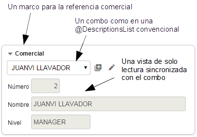
La vista usada es la que se especifica
@ReferenceView o la de por defecto si no se
especifica ninguna.
A partir de v5.8 podremos modificar la condición del combo en tiempo de
ejecución. Por ejemplo, si queremos modificar los valores a mostrar en un
combo dependiendo de un valor que nos diga el cliente, podemos implementar
esta acción al cambiar:
public class OnChangeStateConditionInCity extends OnChangePropertyBaseAction {
public void execute() throws Exception{
String value = (String)getNewValue();
String condition = "";
if ( Is.empty(value)) condition = "1=1";
else condition = "upper(name) like '%" + value + "%'";
getView().setDescriptionsListCondition("state", condition); // modificamos la condición del combo 'state'
}
}
Dependiendo de este valor que nos diga el cliente, mediante el método
setDescriptionsListCondition(),
modificaremos la condición del combo 'state' y por tanto los valores que
se estén mostrando cambiarán.
Evento
de cambio de valor de referencia
Si queremos reaccionar al evento de cambio de valor de una propiedad
podemos poner:
@ManyToOne(fetch=FetchType.LAZY)
@OnChange(AlCambiarTransportistaEnAlbaran.class)
private Transportista transportista;
En este caso nuestra acción escucha al cambio del código de transportista.
El código a ejecutar es:
package org.openxava.test.acciones;
import org.openxava.actions.*;
/**
* @author Javier Paniza
*/
public class AlCambiarTransportistaEnAlbaran
extends OnChangePropertyBaseAction { // 1
public void execute() throws Exception {
if (getNewValue() == null) return;
getView().setValue("observaciones",
"El transportista es " + getNewValue());
addMessage("transportista_cambiado");
}
}
La acción implementa
IOnChangePropertyAction, mediante
OnChangePropertyBaseAction
(1), aunque es una referencia. Recibimos el cambio de la propiedad clave
de la referencia; en este caso
transportista.codigo. El resto es
como en
el
caso de una propiedad.
Búsqueda
de referencia al cambiar
El usuario puede buscar el valor de una referencia simplemente tecleando
su clave. Por ejemplo, si hay una referencia a
Subfamilia, el
usuario puede teclear el código de subfamilia y automáticamente se cargará
la información de la subfamilia en la vista. Esto se hace usando una
acción "al cambiar" que hace la búsqueda. Podemos especificar nuestra
propia acción para buscar cuando la clave cambia usando la anotación
@OnChangeSearch, justo así:
@ManyToOne(fetch=FetchType.LAZY)
@OnChangeSearch(BuscarAlCambiarSubfamilia.class)
private Subfamilia subfamilia;
Esta acción se ejecuta para realizar la búsqueda, en vez de la acción por
defecto, cuando el usuario cambia el código de subfamilia.
El código a ejecutar es:
package org.openxava.test.acciones;
import org.openxava.actions.*;
/**
*
* @author Javier Paniza
*/
public class BuscarAlCambiarSubfamilia
extends OnChangeSearchAction { // 1
public void execute() throws Exception {
if (getView().getValueInt("codigo") == 0) {
getView().setValue("codigo", new Integer("1"));
}
super.execute();
}
}
La acción implementa
IOnChangePropertyAction, mediante
OnChangeSearchAction
(1), aunque es una referencia. Recibe el cambio de la propiedad clave de
la referencia; en este caso
subfamilia.codigo.
Este caso es un ejemplo de refinamiento del comportamiento de la búsqueda
al cambiar, porque extiende de
OnChangeSearchAction, que es la
acción por defecto para buscar, y llama a
super.execute().
También es posible hacer una acción al cambiar convencional (extendiendo
de
OnChangePropertyBaseAction por ejemplo) anulando
completamente la lógica de búsqueda.
Escoger
un editor (referencia, nuevo en v3.1.3)
Un editor visualiza la referencia al usuario y le permite editar su valor.
Por defecto, el editor que OpenXava usa para las referencias una vista de
detalle dentro de un marco (la forma estándar) o un a combo (si usas
@DescriptionsList),
pero puedes especificar tu propio editor para una referencia concreta
usando
@Editor.
Por ejemplo, si tienes una referencia a una entidad
Color y la
quieres visualizar en alguna entidad o vista particular usando una
interfaz de usuario personalizada, como un grupo de botones radiales
(radio buttons) con los colores disponibles. Puedes hacerlo de esta forma:
@ManyToOne(fetch=FetchType.LAZY)
@Editor("ColorBotonesRadiales")
private Color color;
En este caso se usará el editor
ColorBotonesRadiales para
visualizar y editar, en vez de la de por defecto. Tienes que definir el
editor
ColorRadioButton en el archivo
editores.xml
en
src/main/resources/xava (o
xava para v6 o anterior) de
tu proyecto:
<editor nombre="ColorBotonesRadiales" url="colorBotonesRadialesEditor.jsp"/>
Además has de escribir el código JSP para tu editor en
colorBotonesRadialesEditor.jsp.
Esta característica es para cambiar el editor para una referencia concreta
en una entidad concreta, o incluso solo en una vista de esa entidad
(usando
@Editor(forViews=)). Si lo que quieres es cambiar un
editor para todas las referencias a cierto tipo de entidad a nivel de
aplicación entonces es mejor configurarlo usando el archivo
editores.xml.
Veáse más en la sección de
Editores
para referencias.
Escoger
tab para la acción de busqueda (referencia, nuevo en v7.4)
Con @SearchListTab
podemos indicar que tab mostrar en el dialogo al realizar la acción de
busqueda.
@ManyToOne(fetch=FetchType.LAZY)
@SearchListTab("ZonaA")
private Almacen almacen;
Para esto en el
Almacen debemos tener un tab llamado
ZonaA:
@Entity
@Tab(name="ZonaA", properties="numero, nombre, zona", defaultOrder="${numero} desc", baseCondition="${zona} = 'A'")
public class Almacen {
Además, los atributos
forViews y
notForViews están
disponibles en
@SearchListTab.
Vista para editar (referencia, nuevo en v7.7)
Por defecto, cuando el usuario crea un nuevo objeto desde una referencia o
modifica uno existente, se usa la vista por defecto del objeto referenciado. Con
@NewView y
@EditView podemos especificar vistas diferentes para
la creación y la modificación respectivamente:
@ManyToOne
@NewView("CreacionSimple")
@EditView("EdicionSimple")
private Cliente cliente;
Cuando el usuario pulsa en el botón para crear un nuevo cliente, se usará la
vista
CreacionSimple de
Cliente. Cuando el usuario pulsa en
el botón para modificar el cliente actual, se usará la vista
EdicionSimple.
Podemos usar solo una de estas anotaciones si solo necesitamos personalizar
la creación o la modificación. Por ejemplo, si solo usamos
@NewView,
la vista por defecto se seguirá usando para la modificación.
Personalización
de colección
Podemos refinar la forma de visualización y comportamiento de una
colección
@OneToMany/@ManyToMany o
calculada
en la vista usando las siguientes anotaciones:
@CollectionView // 1
@ReadOnly // 2
@EditOnly // 3
@NoCreate // 4
@NoModify // 5
@AsEmbedded // 6
@ListProperties // 7
@RowStyle // 8
@EditAction // 9
@ViewAction // 10
@NewAction // 11
@AddAction // 12 Nuevo en v5.7
@SaveAction // 13
@HideDetailAction // 14
@RemoveAction // 15
@RemoveSelectedAction // 16
@DeleteSelectedAction // 17 Nuevo en v7.4
@ListAction // 18
@RowAction // 19 Nuevo en v4.6
@DetailAction // 20
@OnSelectElementAction // 21 Nuevo en v3.1.2
@Editor // 22 Nuevo en v3.1.3
@SearchListCondition // 23 Nuevo en v4m4
@Tree // 24 Nuevo en v4m4
@Collapsed // 25 Nuevo en v5.0
@ListSubcontroller // 26 Nuevo en v5.7
@Chart // 27 Nuevo en v7.4
@SimpleList // 28 Nuevo en v7.4
@SearchListTab // 29 Nuevo en v7.4
@NoDefaultActions // 30 Nuevo en v7.4
@NewView // 31 Nuevo en v7.7
@EditView // 32 Nuevo en v7.7
@OneToMany/@ManyToMany // No para colecciones calculadas
private Collection nombreColeccion; // O un getter para colecciones calculadas
Y las siguientes anotaciones para una
@ElementCollection (nuevo en
v5.0):
@ReadOnly // 2 Nuevo en v5.1
@EditOnly // 3 Nuevo en v5.1
@ListProperties // 7
@RemoveSelectedAction // 15 Nuevo en v5.3
@Editor // 20
@Collapsed // 23
@Chart // 27 Nuevo en v7.4
@SimpleList // 28 Nuevo en v7.4
@ElementCollection
private Collection nombreColleccion;
Todas estas anotaciones siguen las
normas
para anotaciones de vista y todas ellas son opcionales. OpenXava
siempre asume valores por defecto correcto si se omiten.
- @CollectionView (OX): La vista del objeto referenciado que se ha
de usar para representar el detalle. Por defecto usa la vista por
defecto.
- @ReadOnly (OX): Si la ponemos solo podremos visualizar los
elementos de la colección, no podremos ni añadir, ni borrar, ni
modificar los elementos.
- @EditOnly (OX): Si la ponemos podemos modificar los
elementos existentes, pero no podemos añadir nuevos ni eliminar.
- @NoCreate (OX): Si la ponemos el usuario final no tendrá el
vínculo que le permite crear o añadir objetos del tipo del objeto
referenciado.
- @NoModify (OX): Si la ponemos el usuario final no tendrá el
vínculo que le permite modificar objetos del tipo del objeto
referenciado. Sólo aplica a colecciones
incrustadas.
- @AsEmbedded (OX): Por defecto las colecciones
incrustadas permiten al usuario crear y añadir elementos,
mientras que las colecciones convencionales permiten solo escoger
entidades existentes para añadir (o quitar) de la colección. Si
ponemos @AsEmbedded entonces la colección de entidades se
comportan como una colección de agregados, permitiendo al usuario
añadir objetos y editarlos directamente. No tiene efecto en el caso de
una colección
incrustada.
- @ListProperties (OX): Indica las propiedades que han de salir en
la lista al visualizar la colección. Podemos calificar las
propiedades. Por defecto saca todas las propiedades persistentes del
objeto referenciado (sin incluir referencias ni calculadas). Solo una
@ListProperties por vista está permitida. El sufijo + (nuevo
en v4.1) se puede añadir a una propiedad para mostrar la suma
de la columna, como en los tabs. Antes de v5.9 el sumatorio de
columnas no funcionaba en las colecciones calculadas, en las
colecciones de elementos ni en las listas @OrderColumn. El
sumatorio (+) no funciona con propiedades calculadas en colecciones
convencionales (@OneToMany sin @OrderColumn). En el
caso de las colecciones de elementos se puede poner el nombre de una
referencia (nuevo en v5.1) si ésta está anotada con @DescriptionsList
en la clase incrustable.
- @RowStyle (OX): Para dar un estilo especial a algunas filas.
Se comporta igual que en el
caso del Tab. No funciona para colecciones calculadas. Es
posible definir varias @RowStyle por cada vista.
- @EditAction
(OX): Permite sobreescribir la acción que inicia
la edición de un elemento de la colección. Esta es la acción mostrada
en cada fila cuando la colección es editable. Solo una @EditAction
por vista está permitida.
- @ViewAction
(OX): Permite sobreescribir la acción para
visualizar un elemento de la colección. Esta es la acción mostrada en
cada fila cuando la colección es de solo lectura. Solo una @ViewAction
por vista está permitida.
- @NewAction
(OX): Permite definir nuestra propia acción para
empezar a crear un nuevo elemento y añadirlo en la colección. Ésta es
la acción que se ejecuta al pulsar en el vínculo 'Nuevo'. Solo una @NewAction
por vista está permitida. Antes de v5.7 esta anotación también se
usaba para sobrescribir la acción 'Añadir', porque entonces no
coexistían.
- @AddAction
(OX): (Nuevo en v5.7) Permite definir
nuestra propia acción para empezar a añadir un nuevo elemento a la
colección escogiendo uno preexistente. Ésta es la acción que se
ejecuta al pulsar en el vínculo 'Añadir'. Solo una @AddAction
por vista está permitida.
- @SaveAction
(OX): Permite definir nuestra propia acción para
grabar el elemento de la colección. Ésta es la acción que se ejecuta
al pulsar el vínculo 'Grabar detalle'. Solo una @SaveAction
por vista está permitida.
- @HideDetailAction
(OX): Permite definir nuestra propia acción para
ocultar la vista de detalle. Ésta es la acción que se ejecuta al
pulsar el bóton 'Cerrar' o al cerrar el diálogo. Solo una @HideDetailAction
por vista está permitida.
- @RemoveAction
(OX): Permite definir nuestra propia acción para
borrar un elemento de la colección. Ésta es la acción que se ejecuta
al pulsar en el botón 'Quitar' en el detalle del elemento. Solo una @RemoveAction
por vista está permitida.
- @RemoveSelectedAction
(OX): Permite definir nuestra propia acción para
quitar los elementos seleccionados de la colección. Ésta es la acción
que se ejecuta al seleccionar algunas filas y pulsar en el botón
'Quitar seleccionados', o pulsar directamente el icono de quitar en la
fila deseada. Solo una @RemoveSelectedAction por vista está
permitida.
- @DeleteSelectedAction
(OX): (Nuevo en v7.4) Permite definir
nuestra propia acción para eliminar los elementos seleccionados de la
colección y de la base de datos. Ésta es la acción que se ejecuta al
seleccionar algunas filas y pulsar en el botón 'Eliminar
seleccionados', o pulsar directamente el icono de eliminar en la fila
deseada. Solo una @DeleteSelectedAction por vista está
permitida.
- @ListAction
(OX): Para poder añadir acciones en el modo lista;
normalmente acciones cuyo alcance es la colección entera. Es posible
definir varias @ListAction por cada vista.
- @RowAction
(OX): (Nuevo en v4.6) Para poder añadir
acciones en el modo lista asociadas a cada fila; estas acciones no
están presente en la barra de botones de la colección sino sólo en
cada fila. Es posible definir varias @RowAction por cada
vista.
- @DetailAction
(OX): Para poder añadir acciones en detalle,
normalmente acciones cuyo alcance es el detalle que se está editando.
Es posible definir varias @DetailAction por cada vista.
- @OnSelectElementAction
(OX): (Nuevo en v3.1.2) Para poder
definir una acción a ser ejecutada cuando un elemento de la colección
se selecciona o se deselecciona. Es posible definir varias @OnSelectElementAction
por cada vista.
- @Editor
(OX): (Nuevo en v3.1.3) Nombre del
editor a usar para visualizar la colección en esta vista. El editor
tiene que estar declarado en openxava/src/main/resources/xava/default-editors.xml
o src/main/resources/xava/editores.xml de nuestro
proyecto. Antes de v7 eran OpenXava/xava/default-editors.xml
y xava/editores.xml de nuestro proyecto.
- @SearchListCondition
(OX): (Nuevo en v4m4) Condición a usar
para la lista de elementos seleccionable susceptibles de ser añadidos
a la colección. No aplica a colección embebidas.
- @Tree
(OX): (Nuevo en v4m4) Para indicar que
esta colección se visualizará usando un árbol en vez de una lista.
- @Collapsed (OX): (Nuevo en v5.0) La collección se
mostrará contraída para las vistas indicadas. Visualmente significa
que el marco que rodea a la vista de la collección se iniciará
cerrado. Más tarde el usuario podrá establecer sus preferencias
haciendo clic en el icono de expansión.
- @ListSubcontroller
(OX): (Nuevo en v5.7) Permite agrupar
varias acciones y verlas mediante un único botón desplegable.
- @Chart
(OX): (Nuevo en v7.4) Para visualizar
los valores de una colección como un gráfico.
- @SimpleList
(OX): (Nuevo en v7.4) La colección se
visualizará como una lista simple de solo lectura, sin acciones,
filtros, paginación, ordenación, etc.
- @SearchListTab
(OX): (Nuevo en v7.4) Definimos el tab a
mostrar en la lista cuando se hace una busqueda. Si omitimos esta
anotación, al realizar una búsqueda se mostrará el tab por defecto.
- @NoDefaultActions
(OX): (Nuevo en v7.4) Usando esta
anotación, no se mostrarán las acciones de los controladores DefaultListActionsForCollections
y ´.
- @NewView
(OX): (Nuevo en v7.7) Vista del elemento
de la colección a usar cuando se crea uno nuevo. Sobreescribe
@CollectionView para la creación.
- @EditView
(OX): (Nuevo en v7.7) Vista del elemento
de la colección a usar cuando se edita uno existente. Sobreescribe
@CollectionView para la edición.
Propiedades
en lista
Aplica a colecciones @OneToMany/@ManyToMany, @ElementCollection
y calculadas
Si no usamos ninguna de estas anotaciones una colección se visualiza
usando las propiedades persistentes en el modo lista; aunque lo más normal
es indicar que propiedades salen en la lista:
@ListProperties("codigo, nombre, observaciones, relacionConComercial, comercial.nivel.descripcion, tipo")
@OneToMany(mappedBy="comercial")
private Collection<Cliente> clientes;
De esta forma la colección se visualiza así:
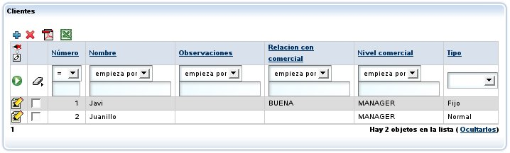
Podemos ver como en la lista de propiedades podemos poner propiedades
calificadas (como
comercial.nivel.descripcion).
Vista
para editar
Aplica a colecciones @OneToMany/@ManyToMany y calculadas
Si no usamos ninguna anotación se usa la vista por defecto para editar la
entidad en cada línea; aunque lo más normal es indicar que vista se ha de
usar para representar el detalle:
@CollectionView("Simple"),
@OneToMany(mappedBy="comercial")
private Collection<Cliente> clientes;
Al pulsar

('Editar') se visualizará el detalle usando la vista
Simple de
Cliente;
para eso
hemos de tener una vista llamada
Simple en la entidad
Cliente
(el modelo de los elementos de la colección).
Este vista se usa también cuando el usuario pulsa en

'Añadir' en una
colección
incrustada, en caso contrario OpenXava no muestra esta vista, en su
lugar muestra una lista de entidades a añadir.
Si la vista
Simple de
Cliente es así:
@View(name="Simple", members="codigo; tipo; nombre; direccion")
Al pulsar detalle aparecerá el diálogo:
 (Nuevo en v7.7)
(Nuevo en v7.7) Podemos usar
@NewView y
@EditView para especificar vistas diferentes para
crear y editar elementos de la colección respectivamente. Estas anotaciones
sobreescriben
@CollectionView para su operación específica:
@CollectionView("Simple")
@NewView("CreacionSimple") // Sobreescribe @CollectionView para la creación
@EditView("EdicionSimple") // Sobreescribe @CollectionView para la edición
@OneToMany(mappedBy="factura")
private Collection<LineaFactura> lineas;
Usar
@CollectionView("Simple") solo es equivalente a usar tanto
@NewView("Simple") como
@EditView("Simple"). Podemos usar
@NewView y
@EditView para sobreescribir
@CollectionView
para la creación o la edición, o usarlas sin
@CollectionView para
especificar vistas solo para la creación o la edición mientras se mantiene
la vista por defecto para la otra operación.
Colección
de elementos
En el caso de una
@ElementCollection (nuevo en v5.0)
no se usa
@CollectionView porque los datos son editables
directamente en la colección, como en una hoja de cálculo. Sin embargo, la
mayoría del comportamiento en modo detalle también está disponbile en las
colecciones de elementos, incluyendo el soporte de las siguiente
anotaciones en los miembro de la clase incrustable:
@ReadOnly, @Editor, @SearchListCondition (nuevo en v5.1), @SearchAction (nuevo en v5.1), @DefaultValueCalculator (nuevo en v5.1), @OnChange (nuevo en v5.1), @OnChangeSearch (nuevo en v5.1), @NoSearch (nuevo en v5.1) y
@DescriptionsList (nuevo en v5.1).
Se puede usar
@ListProperties en una colección de elementos, de
esta manera:
@ElementCollection
@ListProperties("producto.codigo, producto.descripcion, precioUnitario, cantidad, importe")
private Collection<LineaPresupuesto> lineas;
Obtenemos la siguiente interfaz de usuario:
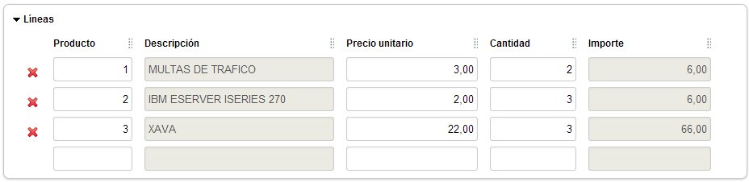
En el caso de las colecciones de elementos se puede poner el nombre de una
referencia
(nuevo en v5.1) en
@ListProperties si está
anotada con
@DescriptionsList en la clase incrustable. Es decir,
podemos escribir:
@ElementCollection
@ListProperties("factura.ano, factura.numero, factura.importe, estado, recepcionista") // recepcionista es una referencia
private Collection<GastorServicio> gastos;
Donde
recepcionista es no es una propiedad sino una referencia,
una referencia anotada con
@DescriptionsList, de esta forma:
@Embeddable
public class GastoServicio {
@ManyToOne(fetch=FetchType.LAZY)
@DescriptionsList
private Recepcionista recepcionista;
...
}
A partir del código de arriba se obtiene:
 @DescriptionsList
@DescriptionsList con
showReferenceView=true no está
soportado en las colecciones de elementos.
Acción
de editar/ver detalle propia
Aplica a colecciones @OneToMany/@ManyToMany y calculadas
Podemos refinar fácilmente el comportamiento cuando se pulse el vínculo
('Editar') usando
@EditAction:
@EditAction("Factura.editarLinea")
@OneToMany (mappedBy="factura", cascade=CascadeType.REMOVE)
private Collection<LineaFactura> lineas;
Hemos de definir
Factura.editarLinea en
controladores.xml:
<controlador nombre="Factura">
...
<accion nombre="editarLinea" oculta="true"
imagen="images/edit.gif"
clase="org.openxava.test.acciones.EditarLineaFactura">
<usa-objeto nombre="xava_view"/> <!-- No obligatorio desde v4m2 -->
</accion>
...
</controlador>
Y nuestra acción puede ser así:
package org.openxava.test.acciones;
import java.text.*;
import org.openxava.actions.*;
/**
* @author Javier Paniza
*/
public class EditarLineaFactura extends EditElementInCollectionAction { // 1
public void execute() throws Exception {
super.execute();
DateFormat df = new SimpleDateFormat("dd/MM/yyyy");
getCollectionElementView().setValue( // 2
"observaciones", "Editado el " + df.format(new java.util.Date()));
}
}
En este caso queremos solamente refinar y por eso nuestra acción desciende
de (1)
EditElementInCollectionAction. Nos limitamos a poner un
valor por defecto en la propiedad
remarks. Es de notar que para
acceder a la vista que visualiza el detalle podemos usar el método
getCollectionElementView()
(2).
También es posible eliminar la acción para editar de la interfaz de
usuario, de esta manera:
@EditAction("")
@OneToMany (mappedBy="factura", cascade=CascadeType.REMOVE)
private Collection<LineaFactura> lineas;
Sólo necesitamos poner una cadena vacía como valor para la acción. Aunque
en la mayoría de los casos es suficiente declarar la colección como de
solo lectura (
@ReadOnly).
La técnica para refinar una acción 'ver' (la acción para cada fila cuando
la colección es de solo lectura) es la misma pero usando
@ViewAction en vez de
@EditAction.
Acciones
de lista y fila propias
Aplica a colecciones @OneToMany/@ManyToMany y calculadas
Podemos usar
@ListAction para definir acciones que apliquen
a toda la colección y
@RowAction (nuevas en v4.6) para
definir acciones para cada fila.
@ListAction y
@RowAction
son muy parecidas, de hecho se pueden programar de la misma manera, la
diferencia está en que las
@ListActions se muestran en la barra
de botones de la colección, mientras que las
@RowActions
aparecen en cada fila. Las
@ListActions también pueden aparecer
en cada fila si están definidas con
en-cada-fila="true" en
controladores.xml.
Un ejemplo:
@ListAction("Transportista.traducirNombre"),
private Collection<Transportista> compañeros;
Ahora aparecen un nuevo vínculo al usuario:

Falta definir la acción en
controladores.xml:
<controlador nombre="Transportista">
...
<accion nombre="traducirNombre" oculta="true"
clase="org.openxava.test.actiones.TraducirNombreTransportista">
</accion>
...
</controlador>
Y el código de nuestra acción:
package org.openxava.test.acciones;
import java.util.*;
import org.openxava.actions.*;
import org.openxava.test.modelo.*;
/**
* @author Javier Paniza
*/
public class TraducirNombreTransportista extends CollectionBaseAction { // 1
public void execute() throws Exception {
Iterator it = getSelectedObjects().iterator(); // 2
while (it.hasNext()) {
Transportista transportista = (Transportista) it.next();
transportista.traducir();
}
}
}
La acción desciende de
CollectionBaseAction (1), de esta forma
tenemos a nuestra disposición métodos como
getSelectedObjects()
(2) que ofrece una colección de los objetos seleccionados por el usuario.
Hay disponible otros métodos como
getObjects() (todos los
objetos de la colección),
getMapValues() (los valores de la
colección en formato de mapa) y
getMapsSelectedValues() (los
valores seleccionados de la colección en formato de mapa). En el caso de
@RowAction,
getSelectedObjects() y
getMapsSelectedValues()
devuelven un único elemento, el correspondiente a la fila de la acción,
incluso si la fila no está seleccionada.
Como en el caso de la acciones de detalle (ver la siguiente sección)
puedes usar
getCollectionElementView().
También es posible usar
acciones
para el modo lista como acciones de lista para colecciones con
@OneToMany
y
@Condition, pero no para colecciones calculadas,
@ManyToMany
o listas con
@OrderColumn.
A partir de v5.9 las acciones de fila pueden aparecer de forma selectiva
en cada fila
usando
IAvailableAction igual que con las acciones de modo lista.
Acciones
de lista y fila por defecto
Aplica a colecciones @OneToMany/@ManyToMany y calculadas
Si queremos añadir alguna acciones de lista a todas las colecciones de
nuestra aplicación hemos de crear un controlador llamado
DefaultListActionsForCollections
en nuestro propio
controladores.xml en
src/main/resources/xava
(o
xava para v6 o anterior) como sigue:
<controlador nombre="DefaultListActionsForCollections">
<hereda-de controlador="CollectionCopyPaste"/> <!-- New in v5.9 -->
<hereda-de controlador="Print"/>
<accion nombre="exportarComoXML"
clase="org.openxava.test.acciones.ExportarComoXML">
</accion>
</controlador>
De esta forma todas las colecciones tendrán las acciones del controlador
CollectionCopyPaste
(nuevo en v5.9) y del controlador
Print (para exportar a
Excel y generar informes PDF) y nuestra propia acción
ExportarComoXML.
Esto tiene el mismo efecto que el elemento
@ListAction (ver la sección
acciones
de lista propias) pero aplica a todas las colecciones a la
vez.
Si queremos añadir alguna acciones a todas las filas de las colecciones de
nuestra aplicación hemos de crear un controlador llamado
DefaultRowActionsForCollections
(nuevo en v4.6) en nuestro propio
controladores.xml en
src/main/resources/xava
(o
xava para v6 o anterior) como sigue:
<controlador nombre="DefaultRowActionsForCollections">
<hereda-de controlador="CollectionOpenInNewTab"/> <!-- Nuevo en v7.4 -->
<accion nombre="abrirComoPDF"
clase="org.openxava.test.acciones.AbrirComoPDF">
</accion>
</controlador>
De esta forma, las acciones del controlador
CollectionOpenInNewTab
(Nuevo en v7.4) y nuestra propia acción
AbrirComoPDF estarán
presentes en cada fila de las colecciones. Este tiene el mismo efecto que
el elemento
@RowAction (ver la sección
acciones
de lista y fila propias) pero se aplica a todas las
colecciones a la vez.
A partir de v5.9 esta característica aplica tanto a las colecciones
calculadas como a las persistentes. Antes las propiedades calculadas no
soportaban acciones por defecto para lista y fila.
A partir de v7.4 puedes usar
@NoDefaultActions
para que las acciones de lista y fila por defecto no se muestren para una
colección concreta.
Acciones
de detalle propias
Aplica a colecciones @OneToMany/@ManyToMany y calculadas
También podemos añadir nuestras propias acciones a la vista de detalle
usada para editar cada elemento. Esto se consigue mediante la anotación
@DetailAction. Estas sería acciones que
aplican a un solo elemento de la colección. Por ejemplo:
@DetailAction("Factura.verProducto")
@OneToMany (mappedBy="factura", cascade=CascadeType.REMOVE)
private Collection<InvoiceDetail> lineas;
Esto haría que el usuario tuviese a su disposición otro vínculo al editar
el detalle:
Debemos definir la acción en
controladores.xml:
<controlador nombre="Facturas">
...
<accion nombre="verProducto" oculta="true"
clase="org.openxava.test.acciones.VerProductoDesdeLineaFactura">
<usa-objeto nombre="xava_view"/> <!-- No obligatorio desde v4m2 -->
<usa-objeto nombre="xavatest_valoresFactura"/> <!-- No obligatorio desde v4m2 -->
</accion>
...
</controlador>
Y el código de nuestra acción:
package org.openxava.test.acciones;
import java.util.*;
import javax.ejb.*;
import org.openxava.actions.*;
/**
* @author Javier Paniza
*/
public class VerProductoDesdeLineaFactura
extends CollectionElementViewBaseAction // 1
implements INavigationAction {
@Inject // A partir de v4m2
private Map valoresFactura;
public void execute() throws Exception {
try {
setValoresFactura(getView().getValues());
Object codigo =
getCollectionElementView().getValue("producto.codigo"); // 2
Map clave = new HashMap();
clave.put("codigo", codigo);
getView().setModelName("Producto"); // 3
getView().setValues(clave); // Desde v4m5 puedes user getParentView()
getView().findObject(); // como alternativa a getView()
getView().setKeyEditable(false);
getView().setEditable(false);
}
catch (ObjectNotFoundException ex) {
getView().clear();
addError("object_not_found");
}
catch (Exception ex) {
ex.printStackTrace();
addError("system_error");
}
}
public String[] getNextControllers() {
return new String [] { "ProductoDesdeFactura" };
}
public String getCustomView() {
return SAME_VIEW;
}
public Map getValoresFactura() {
return valoresFactura;
}
public void setValoresFactura(Map map) {
valoresFactura = map;
}
}
Vemos como desciende de
CollectionElementViewBaseAction (1) y
así tiene disponible la vista que visualiza el elemento de la colección
mediante
getCollectionElementView() (2). También podemos acceder
a la vista principal mediante
getView() (3) o la vista padre
mediante
getParentView() (
a partir de v4m5),
normalmente
getView() y
getParentView() devuelven el
mismo valor. En el
capítulo
7 se ven más detalles acerca de como escribir acciones.
Además, usando la vista devuelta por
getCollectionElementView()
podemos añadir y borrar programaticamente acciones de detalle y de lista
con
addDetailAction(),
removeDetailAction(),
addListAction()
y
removeListAction(), ver API doc para
org.openxava.view.View.
Refinar
comportamiento por defecto para la vista de colección
Aplica a colecciones @OneToMany/@ManyToMany y
calculadas (a partir de v5.3 @RemoveSelectedAction también se
puede aplicar a @ElementCollection)
Usando
@NewAction,
@AddAction (nuevo en v5.7),
@SaveAction,
@HideDetailAction,
@RemoveAction,
@RemoveSelectedAction y
@DeleteSelectedAction(nuevo en v7.4) podemos
refinar el comportamiento por defecto para una vista de colección. Por
ejemplo, si queremos refinar el comportamiento de la acción de grabar un
detalle podemos definir nuestra vista de esta forma:
@SaveAction("LineaAlbaran.grabar")
@OneToMany (mappedBy="albaran", cascade=CascadeType.REMOVE)
private Collection<LineaAlbaran> lineas;
Debemos tener la acción
LineaAlbaran.grabar en
controladores.xml:
<controlador nombre="LineaAlbaran">
...
<accion nombre="grabar"
clase="org.openxava.test.acciones.GrabarLineaAlbaran">
<usa-objeto nombre="xava_view"/> <!-- No obligatorio desde v4m2 -->
</accion>
...
</controlador>
Y definir la clase acción para grabar:
package org.openxava.test.acciones;
import org.openxava.actions.*;
/**
* @author Javier Paniza
*/
public class GrabarDetalleAlbaran extends SaveElementInCollectionAction { // 1
public void execute() throws Exception {
super.execute();
// Aquí nuestro código // 2
}
}
El caso más común es extender el comportamiento por defecto, para eso
hemos de extender la clase original para grabar un detalle de una
colección (1), esto es la acción
SaveElementInCollection,
entonces llamamos a
super desde el método
execute()
(2), y después escribimos nuestro propio propio código.
También es posible eliminar cualquiera de estas acciones de la interfaz
gráfica, por ejemplo, podemos definir una colección de esta manera:
@RemoveSelectedAction("")
@OneToMany (mappedBy="albaran", cascade=CascadeType.REMOVE)
private Collection<LineaAlbaran> lineas;
En este caso la acción para quitar los elementos seleccionadas no
aparecerá en la interfaz de usuario. Como se ve, sólo es necesario
declarar una cadena vacía como nombre de la acción.
Nuevo en v5.3: @RemoveSelectedAction también se puede usar con
@ElementCollection.
Por defecto, no se usa ninguna acción Java para eliminar una fila de una
colección de elementos, se hace mediante JavaScript en el navegador. Sin
embargo, con
@RemoveSelectedAction se puede indicar que se use
una acción Java, de esta manera se puede refinar el comportamiento.
Podemos extender
RemoveSelectedInElementCollectionAction (nuevo
en v5.3.2) para hacerlo.
Nuevo en v7.4: @DeleteSelectedAction. Podemos extender de DeleteSelectedInCollectionActionpara refinar el comportamiento.
Acción
cuando un elemento de la colección es seleccionado (nuevo en
v3.1.2)
Aplica a colecciones @OneToMany/@ManyToMany y calculadas
Podemos definir una acción que se ejecute cuando un elemento de una
colección se seleccione o deseleccione. Esto se consigue usando la
anotación
@OnSelectElementAction. Por ejemplo,
supongamos que tenemos una colección como esta:

Y queremos que al seleccionar una fila el valor de el campo
cantidadIngredientesSeleccionados
se actualice en la interfaz de usuario. Vamos a ver como hacerlo.
Primero hemos de anotar nuestra colección:
@OnSelectElementAction("Formula.alSeleccionarIngrediente") // 1
@OneToMany(mappedBy="formula", cascade=CascadeType.REMOVE)
private Collection<IngredienteFormula> ingredientes;
De esta manera tan sencilla (1), y gracias a la anotación
@OnSelectElementAction,
estamos diciendo que cuando el usuario haga click en la casilla de chequeo
(checkbox) de la fila, la acción
Formula.alSeleccionarIngrediente
se ejecutará. Esta acción se declara en
controladores.xml, de
esta manera:
<controlador nombre="Formula">
...
<accion nombre="alSeleccionarIngredientes" oculta="true"
clase="org.openxava.test.acciones.AlSeleccionarIngrediente">
<usa-objeto nombre="xava_view"/> <!-- No obligatorio desde v4m2 -->
</accion>
...
</controlador>
Ahora, solo nos queda el código de la clase
AlSeleccionarIngrediente:
public class AlSeleccionarIngrediente extends OnSelectElementBaseAction { // 1
public void execute() throws Exception {
int size = getView().getValueInt("cantidadIngredientesSeleccionados");
size = isSelected() ? size + 1 : size - 1; // 2
getView().setValue("cantidadIngredientesSeleccionados", new Integer(size));
}
}
La forma más fácil de implementar la acción es extendiendo de
OnSelectElementBaseAction, esto nos permite
acceder a la propiedad
selected (por medio de
isSelected(),
2) que indica si el usuario ha seleccionado o deseleccionado la fila; y
row
(usando
getRow()) que indica el número de fila del elemento de
la colección afectado.
Escoger
un editor (colecciones, nuevo in v3.1.3)
Aplica a colecciones @OneToMany/@ManyToMany, @ElementCollection
y calculadas
Un editor visualiza la colección al usuario y le permite editar su valor.
Por defecto, el editor que OpenXava usa para las colecciones es una lista
con los datos en formato tabular, que permite filtrar, ordenar, paginar,
etc., pero puedes especificar tu propio editor para una colección concreta
usando
@Editor.
Por ejemplo, si tienes una colección de entidades
Cliente y la
quieres visualizar en alguna entidad o vista particular usando una
interfaz de usuario personalizada, como una lista simple de nombres.
Puedes hacerlo de esta forma:
@OneToMany(mappedBy="comercial")
@Editor("NombresClientes")
private Collection<Cliente> clientes;
En este caso se usará el editor
NombresClientes para visualizar
y editar, en vez de la de por defecto. Tienes que definir el editor
NombresClientes
en el archivo
editores.xml en
src/main/resources/xava (o
xava para v6 o anterior) de tu proyecto:
<editor nombre="NombresClientes" url="nombresClientesEditor.jsp"/>
Además has de escribir el código JSP para tu editor en
nombresClientesEditor.jsp.
Esta característica es para cambiar el editor para una colección concreta
en una entidad concreta, o incluso solo en una vista de esa entidad
(usando
@Editor(forViews=)). Si lo que quieres es cambiar un
editor para todas las colecciones a cierto tipo de entidad a nivel de
aplicación entonces es mejor configurarlo usando el archivo
editores.xml.
Veáse la sección
Editores
para colecciones para más detalles.
Condición para lista de
búsqueda (colección, nuevo en v4m4)
Aplica a colecciones @OneToMany/@ManyToMany y calculadas
Puedes especificar una condición para ser aplicada a la lista de elementos
disponible para seleccionar. Usando
@SearchListCondition puedes
definir una condición aplicable a la lista para seccionar, además puedes
usarlo junto con
forViews y
notForViews para definir
criterios diferentes para cada vista (1). Desde la v7.4 la condición
soporta el uso de
${this.} para referenciar una propiedad de la
entidad misma (2), como muestra el siguiente fragmento de código:
private int numero;
@OneToMany(mappedBy="comercial")
@SearchListCondition(value="${codigo} < 5", forViews="SearchListCondition, SearchListConditionBlank") // 1
@SearchListCondition(value="${codigo} < ${this.numero}", forViews="SearchListConditionNumber") // 2
private Collection<Cliente> clientes;
Visualizar colecciones en formato árbol (nuevo en
v4m4)
Aplica a colecciones @OneToMany/@ManyToMany y calculadas
Es posible visualizar una
colección con un árbol:
@OneToMany(mappedBy="padre", cascade = CascadeType.REMOVE)
@Tree // 1
@ListProperties("descripcion") // 2
@OrderBy("carpeta, ordenElement") // 3
// @Editor(value="TreeView") // 4 No es ncecesario desde v7.5
private Collection<ElementoArbolTreeItem> elementos;
Anotando la colección con
@Tree (1) indicas que quieres
visualizar la colección como un árbol. Con la anotación
@ListProperties
(2) puedes definir las propiedades a visualizar en cada rama. Los
elementos se visualizan en el orden natural de la colección definido por
@OrderBy
(3). Debes tener una propidad
String llamada
path para
que sea usado como la ruta de las ramas, también puedes llamarlo por otro
nombre, para esto has de usar la anotación
@Tree (1) indicando
pathProperty.
En versiones anteriores a la v7.5 es necesario usar
@Editor("TreeView")
para que se muestre el editor del árbol.
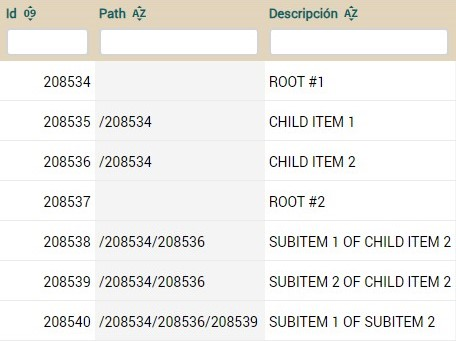
Como se ve en la tabla, el arbol
se hace concatenando el id separado por "/". Los elementos hermanos tienen
que tener el mismo path. El editor se encarga de crear y modificar la
propiedad path. Una colección vista como un árbol podría desplegarse así:
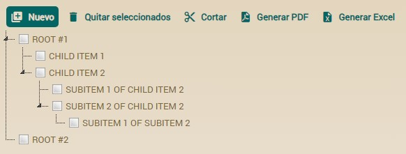
El usuario puede arrastrar y
soltar para mover elementos de una rama a otra (desde v7.2, antes se hacía
usando unos botones).
La sintaxis completa para @Tree
es:
@Tree(
forViews="", // 1
notForViews="", // 2
pathProperty="path", // 3
idProperties="", // 4
initialExpandedState=true, // 5
orderIncrement=2, // 6 Obsoleto desde la versión 7.2
pathSeparator="/" // 7
allowMoveNodes=true // 8 Nuevo en v7.5
)
- forViews:
Indica las vistas para la que aplica.
- notForViews:
Indica las vistas a las que no debe aplicar.
- pathProperty:
Nombre de la propiedad a ser usada como ruta para el árbol, de
manera predeterminada utiliza la propiedad "path" (que debe estar
presente en la clase). También puedes indicarle otro nombre.
- idProperties:
Cada elemento del árbol debe estar identificado de manera única.
Esto normalmente esta asociado con los campos anotados con @Id, por
lo tanto la implementación de @Tree utiliza estos campos. No
obstante, usted puede preferir utilizar cualquier otro campo para
que represente el identificador único del elemento del árbol. Las
propiedades definidas aqui deben estar separadas por coma.
- initialExpandedState:
Si tiene el valor verdadero (true) el árbol es desplegado de modo
expandido.
- orderIncrement:
Si utilizar la anotación @OrderBy, la misma hace referencia a un
campo tipo entero, entonces la implementación de @Tree permite el
reordenamiento del árbol. De manera predeterminada utiliza valores
de incremento de 2, y es el mínimo aceptado. (obsoleto desde la
versión 7.2).
- pathSeparator:
Separador utilizado en la ruta que define cada uno de los elementos
del árbol y su ubicación.
- allowMoveNodes: (Nuevo en
v7.5) Indica si el usuario puede mover nodos en el árbol.
Si se establece en false, los usuarios no podrán mover nodos
mediante arrastrar y soltar. El valor predeterminado es true.
Propiedades
de total (nuevo en v4.3)
Aplica a colecciones @OneToMany/@ManyToMany, @ElementCollection
y calculadas
Dentro de
@ListProperties podemos definir, entre corchetes, un
conjunto de propiedades de la entidad padre para se mostradas en el pie de
la colección como valores totales. Es decir, si definimos una de esta
manera:
@ListProperties("fechaEntrega[factura.fechaEntrega], cantidad, importe[factura.sumaImportes, factura.iva, factura.total]")
Que incluyendo el código de las
propiedades de total sería:
public class Factura {
...
@OneToMany (mappedBy="factura", cascade=CascadeType.REMOVE)
@ListProperties("fechaEntrega[factura.fechaEntrega], cantidad, importe[factura.sumaImportes, factura.iva, factura.total]")
private Collection<DetalleFactura> detalles;
public Date getFechaEntrega() {
Date resultado = null;
for (DetalleFactura detalle: getDetalles()) {
resultado = (Date) ObjectUtils.min(resultado, detalle.getFechaEntrega());
}
return resultado;
}
@Money
public BigDecimal getSumaImportes() {
BigDecimal resultado = BigDecimal.ZERO;
for (DetalleFactura detalle: getDetalles()) {
resultado = resultado.add(detalle.getImporte());
}
return resultado;
}
@Money @Depends("porcentajeIva, sumaImportes")
public BigDecimal getIva() {
return getSumaImportes().multiply(getPorcentajeIva()).divide(CIEN, 2, BigDecimal.ROUND_HALF_UP);
}
@Money @Depends("iva")
public BigDecimal getTotal() {
return getIva().add(getSumaImportes());
}
}
Obtendremos:

Las propiedades de total pueden usarse para todo tipo de colecciones, es
decir para
@OneToMany, @ManyToMany, @ElementCollection o
colecciones calculadas (simplemente un getter que devuelve una colección).
Podemos añadir propiedades de total a cualquier propiedad del
@ListProperties
y pueden ser de cualquier tipo, no sólo número. Estas propiedades de total
se obtienen de la entidad contenedora por tanto hemos de usar la
referencia a la entidad contenedora como prefijo, es decir, el prefijo de
las propiedades de total ha de coincidir con la referencia de
mappedBy
en el caso de las colecciones persistentes.
A partir de v5.9 las propiedades de total pueden ser persistente, por lo
tanto editables, no sólo calculadas (con sólo un getter). También desde
5.9 puedes anotar una propiedad de total con
@Calculation.
Además, a partir de v5.9 es posible combinar el sumatorio de las columnas
(el + en la propiedad) con las propiedades de total. Todo est te permite
escribir una
@ListProperties como esta:
@ListProperties("porcentajeIVA, total+[costeTrabajo.porcentajeBeneficio, costeTrabajo.beneficio, costeTrabajo.total]")
Fíjate en el + después de
total y a continuación las propiedades
de total entre corchetes. En este caso
porcentajeBeneficio es una
propiedad persistente, por tanto editable. El
beneficio y el
total
también son persistente pero con
@Calculation y
@ReadOnly
(no editable). Este es el código completo:
public class CosteTrabajo {
...
@OneToMany (mappedBy="costeTrabajo")
@ListProperties("numero, porcentajeIVA, total+[costeTrabajo.porcentajeBeneficio, costeTrabajo.beneficio, costeTrabajo.total]")
private Collection<FacturaTrabajo> facturas;
@DefaultValueCalculator(value=IntegerCalculator.class,
properties=@PropertyValue(name="value", value="13")
)
private int porcentajeBeneficio; // Persistente con getter y setters, editable
@Calculation("sum(facturas.total) * porcentajeBeneficio / 100")
@ReadOnly
private BigDecimal beneficio; // Persistente con getter y setters, no editable por el @ReadOnly
@Calculation("sum(facturas.total) + beneficio")
@ReadOnly
private BigDecimal total; // Persistente con getter y setters, no editable por el @ReadOnly
}
Esto produce el siguiente efecto:
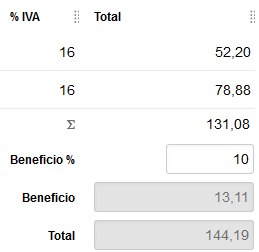
Donde el 131,08 es el sumatorio de la columna, por causa del
total+.
Debajo tienes
porcentajeBeneficio,
beneficio y
total,
las propiedades de total convencionales. Se puede referenciar el sumatorio
de la columna (es decir
total+, el 131,08) desde una propiedad
@Calculation
usando
sum(nombreColumna). Por ejemplo, en este caso podrías
definir la propiedad
beneficio de esta manera:
@Calculation("sum(facturas.total) * porcentajeBeneficio / 100")
@ReadOnly
private BigDecimal beneficio;
En este caso el
sum(facturas.total) dentro de
@Calculation
es la suma de las propiedades
total de todos los elementos de la
colección
facturas, es decir lo mismo que
total+ en
@ListProperties,
es decir el 131,08 que ves en la imagen.
Subcontrolador en una colección (nuevo
en v5.7)
Aplica a colecciones @OneToMany/@ManyToMany y calculadas
Mediante
@ListSubcontroller podremos agrupar varias acciones
para visualizarlas en un único botón desplegable. Si definimos una
colección como la siguiente:
@OneToMany(mappedBy="equipo", cascade=CascadeType.ALL)
@ListSubcontroller("Cosas")
private Collection<MiembroEquipo> miembros;
Obtendremos:

En
@ListSubcontroller definiremos el nombre del controlador al
que hacemos referencia, además están disponibles los atributos
forViews
y
notForViews.
Si queremos que nuestro nuevo subcontrolador muestre una imagen, deberemos
definir el controlador con el atributo
icono o
imagen:
<controlador nombre="Cosas" icono="exclamation">
<accion nombre="verNombres" clase="org.openxava.test.acciones.VerNombreORolDesdeMiembroEquipo" icono="message-outline"/>
<accion nombre="verRoles" clase="org.openxava.test.acciones.VerNombreORolDesdeMiembroEquipo" icono="message">
<poner valor="true" propiedad="roles"/>
</accion>
</controlador>
Gráfico a partir de una colección (nuevo
en v7.4)
Aplica a colecciones @OneToMany/@ManyToMany, @ElementCollection
y calculadas
Se puede hacer que para visualizar una colección se use un gráfico, para
ellos hay que anotar la colección con
@Chart,
de esta manera:
@OneToMany(mappedBy="empresa")
@Chart
Collection<Empleado> empleados;
Por ejemplo, en este caso en lugar
de la típica lista se visualizaría un gráfico usando los datos de los
elementos de la colección, así:
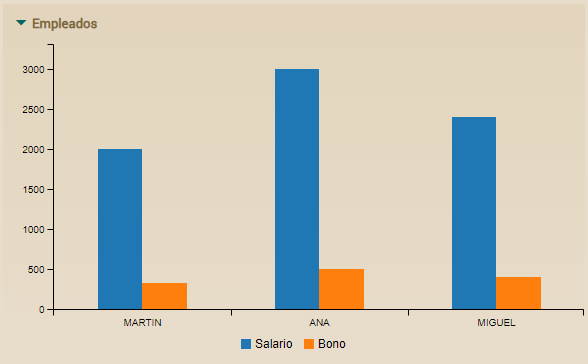
Habría un grupo de barras por cada
elemento de la colección, en este caso, si hay 3 empleados en la colección
aparecen 3 grupos de barras.
OpenXava determina por defecto que
propiedades usar para la etiqueta que aparece en cada grupo de barras y
que propiedades usar para obtener los valores de las barras. Mira la
JavaDoc
de @Chart para aprender más sobre los valores por defecto.
Sin embargo, el programador siempre tiene la opción de definir sus propias
propiedades usando los atributos
labelProperties y
dataProperties
de
@Chart, de esta forma:
@OneToMany(mappedBy="empresa")
@Chart(labelProperties="nombre, apellidos", dataProperties="salario")
Collection<Empleado> empleados;
Lo que generaría un gráfico como
este:
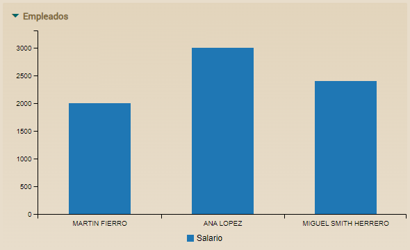
Dado que hemos puesto labelProperties="nombre,
apellidos" la etiqueta usada en cada columna del gráfico es la
concatenación del nombre y los apellidos del empleado, como MIGUEL SMITH
HERRERO por ejemplo. Fíjate también en que sólo sale una columna por
empleado, con el valor del salario, porque hemos puesto dataProperties="salario".
Por supuesto, se pueden poner más propiedades en dataProperties
separadas por comas.
A partir de la versión 7.5, está
disponible un nuevo atributo
type en
@Chart. Este atributo
permite especificar el tipo de gráfico que se mostrará. Los valores
posibles son:
- BAR: Muestra un gráfico de barras (este es el valor por
defecto)
- LINE: Muestra un gráfico de líneas
- PIE: Muestra un gráfico de tarta
Por ejemplo:
En el caso de los gráficos de
tarta, al igual que con otros tipos de gráficos, es común mostrar datos
agregados. Raramente querríamos un gráfico de tarta que muestre todos (o
muchos) los registros de una tabla (lo que sería una colección de
entidades). Por lo tanto, normalmente es mejor usar una clase auxiliar
para mostrar datos agregados o de resumen. Aquí hay un ejemplo:
@Chart(type = ChartType.PIE)
public Collection<Proporcion> getProporcionEmpleadosExternos() {
EntityManager em = XPersistence.getManager();
// Consulta para contar empleados internos (email contiene el nombre de la corporación)
Query consultaInternos = em.createQuery(
"SELECT COUNT(e) FROM EmpleadoCorporacion e " +
"WHERE e.corporacion.id = :idCorporacion AND LOWER(e.email) LIKE :patron");
consultaInternos.setParameter("idCorporacion", getId());
consultaInternos.setParameter("patron", "%" + nombre.toLowerCase() + "%");
Long cantidadInternos = (Long) consultaInternos.getSingleResult();
// Consulta para contar empleados externos (email no contiene el nombre de la corporación)
Query consultaExternos = em.createQuery(
"SELECT COUNT(e) FROM EmpleadoCorporacion e " +
"WHERE e.corporacion.id = :idCorporacion AND LOWER(e.email) NOT LIKE :patron");
consultaExternos.setParameter("idCorporacion", getId());
consultaExternos.setParameter("patron", "%" + nombre.toLowerCase() + "%");
Long cantidadExternos = (Long) consultaExternos.getSingleResult();
// Crear y devolver la colección de proporciones
Collection<Proporcion> proporciones = new ArrayList<>();
proporciones.add(new Proporcion("Internos", cantidadInternos.intValue()));
proporciones.add(new Proporcion("Externos", cantidadExternos.intValue()));
return proporciones;
}
Donde Proporcion es una
clase simple que representa una proporción con una descripción y un valor:
@Data
@NoArgsConstructor
@AllArgsConstructor
public class Proporcion {
String descripcion;
int valor;
}
Esto generaría un gráfico de
tarta como este:
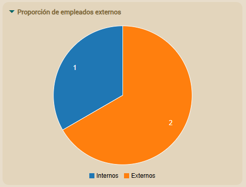
Además, los atributos forViews
y notForViews están disponibles en @Chart.
Lista simple (nuevo en v7.4)
Aplica a colecciones @OneToMany/@ManyToMany, @ElementCollection
y calculadas
Con la anotación
@SimpleList
la lista se visualiza de solo lectura, sin acciones, sin filtros, sin
paginación, sin ordenación, etc. Es decir, si anotamos nuestra colección
con
@SimpleList, de esta manera:
@OneToMany(mappedBy="padre")
@SimpleList
Collection<RotacionPersonal> rotacionPorAnyo;
Se visualizaría así:
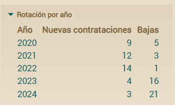
Útil cuando el usuario necesite
ver los datos de forma simple y clara, y no tenga que interactuar con
ellos, como en un cuadro de mandos, por ejemplo.
Además, los atributos forViews
y notForViews están disponibles en @SimpleList.
Como ocurre con todos los
elementos visuales de OpenXava, puedes cambiar el estilo de la lista
simple (
@SimpleList) usando CSS. La clase CSS disponible es
.ox-simple-list.
El código CSS lo puedes incluir en
custom.css o en tu propio
estilo como se explica en la
documentación
sobre el estilo visual personalizado.
Escoger tab
para la acción de busqueda (colecciones, nuevo en v7.4)
Aplica a colecciones @OneToMany/@ManyToMany y
calculadas
Con @SearchListTab
podemos indicar que tab mostrar en el dialogo al realizar la acción de
añadir.
@OneToMany(mappedBy="vendedor")
@SearchListTab("Demo")
private Collection<Cliente> clientes;
Para esto en
Cliente debemos tener un tab llamado
Demo:
@Entity
@Tab(name="Demo", properties="nombre, tipo, vendedor.nombre", defaultOrder="${nombre} desc", baseCondition="${tipo} = 'R'")
public class Cliente {
Además, los atributos
forViews y
notForViews están
disponibles en
@SearchListTab.
Ocultar acciones por defecto de lista y
fila (nuevo en v7.4)
Aplica a colecciones @OneToMany/@ManyToMany y
calculadas
Con @NoDefaultActions
podemos ocultar las acciones de los controladores DefaultListActionsForCollections
y DefaultRowActionsForCollections.
@OneToMany(mappedBy="vendedor")
@NoDefaultActions
private Collection<Carrier> carriers;
Además, los atributos forViews y notForViews
están disponibles en @NoDefaultActions.
Propiedades
transitorias para controles gráficos
Con
@Transient (JPA) podemos usar una propiedad
que no se guarde en la base de datos, pero que sí nos interesa que se
visualice al usuario. Podemos usarlas para proporcionar controles al
usuario para manejar la interfaz gráfica.
Un ejemplo:
@Transient
@DefaultValueCalculator(value=EnumCalculator.class,
properties={
@PropertyValue(name="enumType", value="org.openxava.test.modelo.Albaran$EntregadoPor")
@PropertyValue(name="value", value="TRANSPORTISTA")
}
)
@OnChange(AlCambiarEntradoPor.class)
private EntragadoPor entregadoPor;
public enum EntregadoPor { TRABAJADOR, TRANSPORTISTA }
Podemos observar como la sintaxis es exactamente igual que en el caso de
definir una propiedad en la parte del modelo, podemos incluso hacer que
sea un
enum y que tenga un
@DefaultValueCalculator. Después de haber
definido la propiedad podemos usarla en la vista como una propiedad más,
asignandole una acción
@OnChange por ejemplo y por supuesto
poniendola como miembro de una vista.
Acciones de la
vista
Además de poder asociar acciones a una propiedad, referencia o colección,
podemos tambien definir acciones arbitrarias en cualquier parte de nuestra
vista. Para poder hacer esto se ponemos el nombre calificado de la acción
seguido de paréntesis (), de esta manera:
@View( members=
"codigo;" +
"tipo;" +
"nombre, Cliente.cambiarEtiquetaDeNombre();" +
...
El efecto visual sería:

Podemos ver el vínculo 'Cambiar nombre de etiqueta' que ejecutará la
acción
Clientes.cambiarEtiquetaDeNombre al pulsarlo.
Si la vista contenedora de la acción no es editable, la acción no estará
presente. Si queremos que la acción esté siempre activa, incluso si la
vista no está editable, hemos de usar poner la palabra ALWAYS entre los
paréntesis, como sigue:
@View( members=
"codigo;" +
"tipo;" +
"nombre, Cliente.cambiarEtiquetaDeNombre(ALWAYS);" +
...
La forma normal de exponer las acciones al usuario es mediante los
controladores (acciones en la barra), lo controladores son reutilizables
entre vistas, pero puede que a veces necesitemos una acción específica a
una vista, y queramos visualizarla dentro de la misma (no en la barra de
botones), para estos casos el elemento accion puede ser útil.
Podemos ver más acerca de las acciones en el
capítulo
7.
Clase
transitoria: Solo para crear vistas
En OpenXava no se puede tener vistas que no estén asociadas a un modelo.
Así que si queremos dibujar una interfaz gráfica arbitraria, lo que hemos
de hacer es crear una clase, no marcarla como entidad y a partir de ésta
definir una vista.
Una clase transitoria no está asociada a ninguna tabla de la base de
datos, normalmente se usa solo para visualizar interfaces de usuario no
relacionadas con ninguna tabla de la base de datos.
Un ejemplo puede ser:
package org.openxava.test.model;
import javax.persistence.*;
import org.openxava.annotations.*;
/**
* Ejemplo de una clase OpenXava transitoria (no persistente) del modelo. <p>
*
* Esto se puede usar, por ejemplo, para visualizar un diálogo,
* o cualquier otro interfaz gráfica.<p>
*
* Notemos como no está marcada con @Entity <br>
*
* @author Javier Paniza
*/
@Views({
@View(name="Familia1", members="subfamilia"),
@View(name="Familia2", members="subfamilia"),
@View(name="ConFormularioSubfamilia", members="subfamilia"),
@View(name="Rango", members="subfamilia; subfamiliaHasta")
})
public class FiltroPorSubfamilia {
@ManyToOne(fetch=FetchType.LAZY) @Required
@NoCreate(forViews="Familia1, Familia2")
@NoModify(forViews="Familia2, ConFormularioSubfamilia")
@NoSearch(forViews="ConFormularioSubfamilia")
@DescriptionsLists({
@DescriptionsList(forViews="Familia1",
condition="${familia.codigo} = 1", order="${codigo} desc"
),
@DescriptionsList(forViews="Familia2",
condition="${familia.codigo} = 2"
)
})
private Subfamilia subfamilia;
@ManyToOne(fetch=FetchType.LAZY)
private Subfamilia subfamiliaHasta;
public Subfamilia getSubfamilia() {
return subfamilia;
}
public void setSubfamilia(Subfamilia subfamilia) {
this.subfamilia = subfamilia;
}
public Subfamilia getSubfamiliaHasta() {
return subfamiliaHasta;
}
public void setSubfamiliaHasta(Subfamilia subfamiliaHasta) {
this.subfamiliaHasta = subfamiliaHasta;
}
}
Para definir una clase del modelo como transitorio solo necesitamos
definir una clase convencional sin
@Entity. No hemos de poner el mapeo ni
declarar propiedades como clave.
De esta forma podemos hacer un diálogo que puede servir, por ejemplo, para
lanzar un listado de familias o productos filtrado por subfamilias.
Las clases transitorias se usan con
módulos
con solo detalle. A partir de v5.0 hemos de
definir
el módulo explícitamente en aplicacion.xml para cada clase
transitoria. Hasta v4.9.1 se podía usar una clase transitoria sin definir
un módulo dado que se generaba uno por defecto, sólo era necesario si
queriamos generar el portlet.
Hasta v7.3.3 el paquete para las clases transitorias del modelo tenía que
ser el mismo que el de las clases persistentes. Sin embargo, a partir de
v7.4 las clases transitorias también pueden estar en los paquetes hermanos
del paquete modelo, es decir si tu paquete modelo es
com.tuempresa.tuaplicacion.modelo
puedes poner tu clases transitorias en
com.tuempresa.tuaplicacion.cuadrosmando
o
com.tuempresa.tuaplicacion.dialogos, por ejemplo,
aunque estos paquetes no contengan ninguna clase persistente.
Podemos así tener un generador de cualquier tipo de interfaz gráficas
sencillo y bastante flexible, aunque no queramos que la información
visualizada sea persistente.
@ListSubcontroller
<controller
name="TeamMemberSub" icon="exclamation"> <action
name="viewNames"
class="org.openxava.test.actions.ViewNamesOrRolesNamesFromTeamMember"
icon="message-outline"/> <action name="viewRoles"
class="org.openxava.test.actions.ViewNamesOrRolesNamesFromTeamMember"
icon="message"> <set value="true" property="roles"/>
</action> </controller>public
void execute() throws Exception { String value =
(String)getNewValue(); String condition = ""; if (Is.empty(value))
condition = "1=1"; else condition = "upper(name) like '%" + value +
"%'"; getView().setDescriptionsListCondition("state", condition);
getView().refreshDescriptionsLists(); }